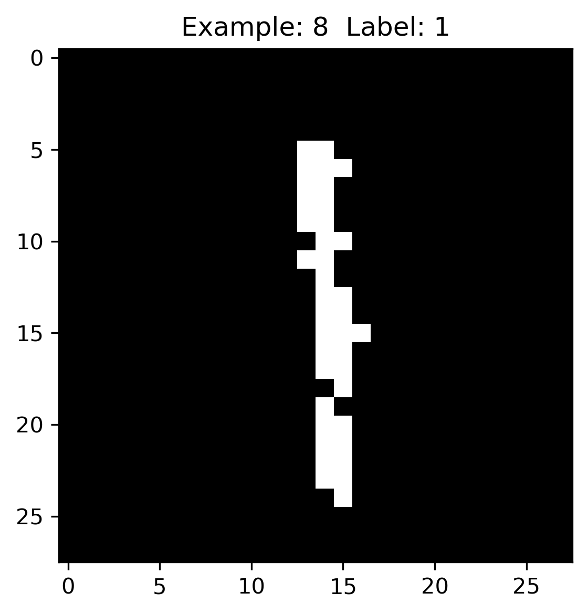

監督式學習(Supervised Learning)
Table of Contents
1. 簡介
監督式學習獲得的結果可以是數值、也可以是類別，以結果分類，我們可以將監督式學分大致分為兩類：迴歸(結果為數值)與為分類(結果為類別)。
1.1. 監督式學習的主要類型
1.1.1. 分類(Cliasification)
分類問題也稱為離散(discrete)預測問題，因為每個分類都是一個離散群組。In supervised learning, the training set you feed to the algorithm includes the desired solutions, called labels1.

Figure 1: 典型的監督式學習：垃圾郵件分類
可再細分為:
- Binary classification
- Multiclass classification
典型的分類案例: MNIST, IRIS
1.1.2. 迴歸(Regression)
另一種監督式學習為回歸（regression），即，根據一組預測特徵（predictor，如里程數、車齡、品牌）來預測目標數值（如二手車車價）1，這個目標數值也是label。
有些迴歸演算法也可以用來分類，例如Logistic，它可以輸出一個數值，以這個數值來表示對應到特定類別的機率，例如，某封email為垃圾郵件的機率為20%、某張圖片為狗的機率為70%。
迴歸問題可再細分為兩類：
- Linear regression:
- 假設輸入變量(x)與單一輸出變量(y)間存在線性關係，並以此建立模型。
- 優點: 簡單、容易解釋
- 缺點: 輸入與輸出變量關係為線性時會導致低度擬合
- 例: 身高與體重間的關係
- Logistic regression
- 也是線性方法，但使用logist function轉換輸出的預測結果，其輸出結果為類別機率(class probabilities)
- 優點: 簡單、容易解釋
- 缺點: 輸入與輸出變量關係為線性時無法處理分類問題
典型迴歸案例: Boston Housing Data
1.2. 特例
監督式學習主要包括分類和回歸，但也包括以下奇特的例子：
- 序列生成(sequence generation)：給定一張圖，產生一個標題來描述該圖片，有時也可以使用一部份連續的資料進行預測。
- 語法樹預測(syntax tree prediction)：給定一個句子，以語意的結構為節點，預測並分解成語法樹。
- 物體偵測(object detection)：給定一張圖片，繪製邊界框來標示圖片內不同的物體。這也可以視為分類問題（給定許多候選邊界框，對每個邊界框的內容進行分類）或并用分類和迴歸技巧，透過向量迴歸預測邊界框。
- 圖像分割(image segmentation)：給定一張圖片，用像素遮罩(pixel-level mask)來區別不同物體。
- Linear Regression: 拿前幾天的空氣 PM 值預估未來的空氣 PM 值
- Classification
- Binary Classification: 垃圾郵件分類
- Multi-class Classification: 手語翻譯
- k-Nearest Neighbors (KNN)
- Naive Bayes Classifiers
- Decision Tree
- Neural Networks (Deep Learning)
- Ensembles of Decision Trees
- Linear Models: Logistic regression
2. 監督式學習演算法
2.1. K-nearest neighbors (KNN)
KNN藉由找出與新資料點最相近的 k 個已具有label的資料點，讓這些資料點投票決定新資料點的label。
- 優點: 能處理更複雜的非線性關係，但仍可被解釋
- 缺點: 隨著資料與features的數量增加，KNN的效果也會降低； k 值的選擇也會影響KNN的效果，太小的 k 值會導致過度擬合、太高的 k 值則會低度擬合。
- 應用: 經常用於推薦系統
2.2. Methods based on tree(Decision tree and Random Forest)
2.2.1. Single decision tree: 遍歷所有訓練資枓來建立規則，但容易過度擬合
2.2.2. Bagging: 將上述tree加入bootstrap aggregation(如bagging)，即，使用多次隨機實例採樣(multiple random samples of instances)，並為每次採樣建立一棵decision tree，並對每個資料實例進行預測，預測方式為透過平均每棵樹的預測結果，藉由這種方式可以解決decision tree容易過度擬合的問題。
2.2.3. Random forest: 除了將資料實例進行採樣，也對每棵decision tree的分支條件中 待預測label 進䈩隨機採樣，而非使用所有的待預測label。透過這種方式，random forest可以建立出彼此相關性更低的decision，進而改善過度擬合與泛化誤差。
2.3. Boosting
同樣是建立許多樹，但是它 依多建立每棵decision tree , 利用前一棵decision所習得的資訊來改善下一棵decision tree的預測結果。是所有tree-based solution中表現最好的方式，也是許多machine learning比賽的常勝軍。
- 優點：performance佳，能處理資料缺失與特徵分類問題
- 缺點：可解釋性低
2.4. SVM(Support Vector Machines)
使用演算法和已知的label在空間中建構超平面來分類資料
2.5. 神經網路
3. 迴歸原理
3.1. Step 1
- Model: \(y = w*x+b\)
- Data: 找一堆現成的資料
3.2. Step 2: Goodness of Function
- Training Data
- Loss function L: 越小越好 input: a function / output: how bad it is
- Pick the “Best: Function \(f* = arg min L(f)\) 上述可以微分來求最佳解，即求 function L 的最小值
- 數值最佳解: Gradient Descent(找拋物面最低點)
3.3. 最短距離分類器
import math #from statistics import mean # importing reduce() from functools import reduce def Average(lst): avgx = 0 avgy = 0 for (x, y) in lst: avgx += x avgy += y return avgx/len(lst), avgy/len(lst) def ed(lst, x, y): dist = 0 for (lx, ly) in lst: dist += (x - lx)*(x - lx) + (y - ly)*(y - ly) return math.sqrt(dist) groupA = [[4, 6] ,[5,7] ,[5,8] ,[5.8,6] ,[6,6] ,[6,7] ,[7,5] ,[7,7] ,[8,4] ,[9,5]] groupB = [[2,2] ,[4,2] ,[4,4] ,[5,4] ,[5,3] ,[6,2]] tarx = 5 tary = 5 centerX, centerY = Average(groupA) sdA = (tarx - centerX)*(tarx - centerX) centerX, centerY = Average(groupB) sdB = (tarx - centerX)*(tarx - centerX) if sdA < sdB: print("A") else: print("B") print(ed(groupA, tarx, tary)) print(ed(groupB, tarx, tary))
B 7.851114570556208 6.708203932499369
3.4. 迴歸預測流程(以波士頓房價預測為例)
- Import the required module
- Load and configure the Boston housing data set
- Chekc the relation between the variable, using pairplot and correlation graph
- Descriptive statistics: central tendency and dispersion
- Select the required columns
- Train the test split
- Normalize the data
- Build the input pipeline for the TensorFlow model
- Model tranining
- Predictions
- Validation
4. 如何挑選適合的模型
4.1. overfitting: a more complex model does not always lead to better performance of data training
4.2. 如何預防 overfitting: collect more data
5. 分類實作: IRIS(KNN、DecisionTree)
:CUSTOM_ID: IRIS-KNN
K-NearestNeighbor分類算法是機器學習裡監督類學習中最簡單的方法之一,由Cover和Hart在1968年提出。kNN算法的核心思想是如果一個樣本在特徵空間中的k個最相鄰的樣本中的大多數屬於某一個類別，則該樣本也屬於這個類別，並具有這個類別上樣本的特性。
KNN為 lazy learner(惰性學習器)的典型例子，所謂惰性是指它不會從「訓練數據集」中學習出「判別函數」(discriminative function)，它的作法是把「訓練數據集」記憶起來。其步驟如下：
- 選定 k 的值和一個「距離度量」(distance metric)。
- 找出 k 個想要分類的、最相近的鄰近樣本。
- 以多數決的方式指定類別標籤。
5.1. 鳶尾花分類問題
5.1.1. DataSet
收集了3種鳶尾花的四個特徵，分別是花萼(sepal)長寬、花瓣(petal)長寬度，以及對應的鳶尾花種類。

Figure 2: 鳶尾花的花萼與花瓣
5.1.2. Mission
輸入花萼和花瓣數據後，推測所屬的鳶尾花類型。

Figure 3: 三種鳶尾花
5.1.3. 實作
讀取資料集
from sklearn import datasets # 讀入資料 iris = datasets.load_iris() print(iris.DESCR)
取出特徵與標籤
x = iris.data y = iris.target print(x[:5]) print(y[:5])
資料觀察
import matplotlib.pyplot as plt import pandas as pd import seaborn as sns #把nupmy ndarray轉為pandas dataFrame,加上columns title npx = pd.DataFrame(x, columns=['fac1','fac2','fac3','fac4']) npy = pd.DataFrame(y.astype(int), columns=['category']) #合併 dataPD = pd.concat([npx, npy], axis=1) print(dataPD) # 畫圖 sns.lmplot('fac1', 'fac2', data=dataPD, hue='category', fit_reg=False) plt.show()
分割資料集
from sklearn.model_selection import train_test_split # 劃分資料集 x_train, x_test, y_train, y_test = train_test_split(iris.data, iris.target, random_state=6)
- train_test_split()
所接受的變數其實非常單純，基本上為 3 項：『原始的資料』、『Seed』、『比例』
- 原始的資料：就如同上方的 data 一般，是我們打算切成 Training data 以及 Test data 的原始資料
- Seed： 亂數種子，可以固定我們切割資料的結果
- 比例：可以設定 train_size 或 test_size，只要設定一邊即可，範圍在 [0-1] 之間
scikit-learn.org: sklearn.model_selection.train_test_split
Split arrays or matrices into random train and test subsets
Quick utility that wraps input validation and next(ShuffleSplit().split(X, y)) and application to input data into a single call for splitting (and optionally subsampling) data in a oneliner.
sklearn.model_selection.train_test_split(*arrays, test_size=None, train_size=None, random_state=None, shuffle=True, stratify=None)[source]
- train_test_split()
所接受的變數其實非常單純，基本上為 3 項：『原始的資料』、『Seed』、『比例』
資料標準化
# 將資料標準化: 利用preprocessing模組裡的StandardScaler類別 from sklearn.preprocessing import StandardScaler # 利用fit方法，對X_train中每個特徵值估平均數和標準差 # 然後對每個特徵值進行標準化(train和test都要做) # 特徵工程：標準化 transfer = StandardScaler() x_train = transfer.fit_transform(x_train) x_test = transfer.fit_transform(x_test)
分類
from sklearn.neighbors import KNeighborsClassifier # KNN 分類器 estimator = KNeighborsClassifier(n_neighbors=1) estimator.fit(x_train, y_train) # 模型評估 # 方法一：直接對比真實值和預測值 y_predict = estimator.predict(x_test) print('y_predict：\n', y_predict) print('直接對比真實值和預測值:\n', y_test == y_predict) # 方法二：計算準確率 score = estimator.score(x_test, y_test) print('準確率:\n', score)
5.1.4. 作業
修改上述程式碼，以折線圖表示K值與KNN預測準確度間的關係。
5.2. KNN實作 iris KNN sklearn
K-NearestNeighbor分類算法是機器學習裡監督類學習中最簡單的方法之一,由Cover和Hart在1968年提出。kNN算法的核心思想是如果一個樣本在特徵空間中的k個最相鄰的樣本中的大多數屬於某一個類別，則該樣本也屬於這個類別，並具有這個類別上樣本的特性。
KNN為 lazy learner(惰性學習器)的典型例子，所謂惰性是指它不會從「訓練數據集」中學習出「判別函數」(discriminative function)，它的作法是把「訓練數據集」記憶起來。其步驟如下：
- 選定 k 的值和一個「距離度量」(distance metric)。
- 找出 k 個想要分類的、最相近的鄰近樣本。
- 以多數決的方式指定類別標籤。
5.2.1. 實作
讀取資料集
from sklearn import datasets # 讀入資料 iris = datasets.load_iris() print(iris.DESCR)
取出特徵與標籤
x = iris.data y = iris.target print(x[:5]) print(y[:5])
資料觀察
import matplotlib.pyplot as plt import pandas as pd import seaborn as sns #把nupmy ndarray轉為pandas dataFrame,加上columns title npx = pd.DataFrame(x, columns=['fac1','fac2','fac3','fac4']) npy = pd.DataFrame(y.astype(int), columns=['category']) #合併 dataPD = pd.concat([npx, npy], axis=1) print(dataPD) # 畫圖 sns.lmplot('fac1', 'fac2', data=dataPD, hue='category', fit_reg=False) plt.show()
分割資料集
from sklearn.model_selection import train_test_split # 劃分資料集 x_train, x_test, y_train, y_test = train_test_split(iris.data, iris.target, random_state=6)
- train_test_split()
所接受的變數其實非常單純，基本上為 3 項：『原始的資料』、『Seed』、『比例』
- 原始的資料：就如同上方的 data 一般，是我們打算切成 Training data 以及 Test data 的原始資料
- Seed： 亂數種子，可以固定我們切割資料的結果
- 比例：可以設定 train_size 或 test_size，只要設定一邊即可，範圍在 [0-1] 之間
scikit-learn.org: sklearn.model_selection.train_test_split
Split arrays or matrices into random train and test subsets
Quick utility that wraps input validation and next(ShuffleSplit().split(X, y)) and application to input data into a single call for splitting (and optionally subsampling) data in a oneliner.
sklearn.model_selection.train_test_split(*arrays, test_size=None, train_size=None, random_state=None, shuffle=True, stratify=None)[source]
- train_test_split()
所接受的變數其實非常單純，基本上為 3 項：『原始的資料』、『Seed』、『比例』
資料標準化
# 將資料標準化: 利用preprocessing模組裡的StandardScaler類別 from sklearn.preprocessing import StandardScaler # 利用fit方法，對X_train中每個特徵值估平均數和標準差 # 然後對每個特徵值進行標準化(train和test都要做) # 特徵工程：標準化 transfer = StandardScaler() x_train = transfer.fit_transform(x_train) x_test = transfer.fit_transform(x_test)
分類
from sklearn.neighbors import KNeighborsClassifier # KNN 分類器 estimator = KNeighborsClassifier(n_neighbors=1) estimator.fit(x_train, y_train) # 模型評估 # 方法一：直接對比真實值和預測值 y_predict = estimator.predict(x_test) print('y_predict：\n', y_predict) print('直接對比真實值和預測值:\n', y_test == y_predict) # 方法二：計算準確率 score = estimator.score(x_test, y_test) print('準確率:\n', score)
5.2.2. TNFSH作業 TNFSH
修改上述程式碼，以折線圖表示K值與KNN預測準確度間的關係。
5.3. 決策樹實作 DecisionTree sklearn
一棵複雜的決策樹

Figure 4: Caption
5.3.1. iris
from sklearn.datasets import load_iris from sklearn import tree from sklearn.model_selection import train_test_split # Load in our dataset # # 讀入鳶尾花資料 iris = load_iris() iris_x = iris.data iris_y = iris.target # 切分訓練與測試資料 train_x, test_x, train_y, test_y = train_test_split(iris_x, iris_y, test_size = 0.3) # 建立分類器 # Initialize our decision tree object classification_tree = tree.DecisionTreeClassifier(criterion = "entropy") # Train our decision tree (tree induction + pruning) classification_tree = classification_tree.fit(iris_x, iris_y) # 預測 test_y_predicted = classification_tree.predict(test_x) print(test_y_predicted) # 標準答案 print(test_y) print('得分:',classification_tree.score(iris_x, iris_y)) import graphviz import pydot import matplotlib.pyplot as plt plt.clf() dot_data = tree.export_graphviz(classification_tree, out_file=None, feature_names=iris.feature_names, class_names=iris.target_names, filled=True, rounded=True, special_characters=True) graph = graphviz.Source(dot_data) #graph.render("images/DecisionTree.png", view=True) graph.format = 'png' graph.render('images/DecisionTree') #plt.savefig('images/DecisionTree.png', dpi=300)
[0 0 0 0 1 2 0 1 0 2 2 0 2 2 2 2 2 1 1 1 0 2 1 1 2 1 2 2 0 2 0 1 0 2 0 2 2 0 1 1 1 2 2 0 0] [0 0 0 0 1 2 0 1 0 2 2 0 2 2 2 2 2 1 1 1 0 2 1 1 2 1 2 2 0 2 0 1 0 2 0 2 2 0 1 1 1 2 2 0 0] 得分: 1.0

Figure 5: Decision Tree
5.4. bank-loan2
Load the data and finish the cleaning process
#the dataset is available on kaggle too train = pd.read_csv('/kaggle/input/bank-loan2/madfhantr.csv') #check for missing values train.isnull().sum()
There are two possible ways to either fill the null values with some value or drop all the missing values(I dropped all the missing values).
If you look at the original dataset’s shape, it is (614,13), and the new data-set after dropping the null values is (480,13).
train.dropna(inplace=True)Take a Look at the data-set We found there are many categorical values in the dataset Howevern, The decision tree does not support categorical data as features.
So the optimal step to take at this point is you can use feature engineering techniques like label encoding and one hot label encoding.
# I selected few of the columns from the dataset for this tutorial train = train[['Gender','Married','Education','Self_Employed','Credit_History','Loan_Status']] train['Gender']=train['Gender'].replace(to_replace='Male',value='1') train['Gender']=train['Gender'].replace(to_replace='Female',value='0') train['Married']=train['Married'].replace(to_replace='Yes',value='1') train['Married']=train['Married'].replace(to_replace='No',value='0') train['Self_Employed']=train['Self_Employed'].replace(to_replace='No',value='0') train['Self_Employed']=train['Self_Employed'].replace(to_replace='Yes',value='1') train['Education']=train['Education'].replace(to_replace='Graduate',value='1') train['Education']=train['Education'].replace(to_replace='Not Graduate',value='0')
Split the data-set into train and test sets
X = train.drop(columns=['Loan_Status']) y = train.Loan_Status from sklearn.model_selection import train_test_split X_train,X_test,y_train,y_test = train_test_split(X,y,test_size=0.3,random_state=42)
Why should we split the data before training a machine learning algorithm?
Please visit Sanjeev’s article regarding training, development, test, and splitting of the data for detailed reasoning.
Build the model and fit the train set.
from sklearn.tree import DecisionTreeClassifier from sklearn import tree clf = tree.DecisionTreeClassifier(max_depth=3) clf.fit(X_train,y_train)
Before we visualize the tree, let us do some calculations and find out the root node by using Entropy.
- Calculation 1: Find the Entropy of the total dataset
- Calculation 2: Now find the Entropy and gain for every column
Visualize the Decision Tree
import graphviz dot_data = tree.export_graphviz(clf, out_file=None, feature_names=['Gender','Married','Education','Self_Employed','Credit_History'], class_names=['Yes','No'],filled=True, rounded=True, special_characters=True) graph = graphviz.Source(dot_data) graph.render("Gini") graph
Well, it’s like we got the calculations right!
So the same procedure repeats until there is no possibility for further splitting.
Check the score of the model
clf.score(X_test,y_test) #output = 0.7986111111111112
We almost got 80% percent accuracy. Which is a decent score for this type of problem statement?
5.4.1. DEMO
import numpy as np import pandas as pd ## 1. Load the data and finish the cleaning process ## the dataset is available on kaggle too train = pd.read_csv('./madfhantr.csv') #check for missing values train.isnull().sum() # train.dropna(inplace=True) ## 2. Take a Look at the data-set # I selected few of the columns from the dataset for this tutorial train = train[['Gender','Married','Education','Self_Employed','Credit_History','Loan_Status']] train['Gender']=train['Gender'].replace(to_replace='Male',value='1') train['Gender']=train['Gender'].replace(to_replace='Female',value='0') train['Married']=train['Married'].replace(to_replace='Yes',value='1') train['Married']=train['Married'].replace(to_replace='No',value='0') train['Self_Employed']=train['Self_Employed'].replace(to_replace='No',value='0') train['Self_Employed']=train['Self_Employed'].replace(to_replace='Yes',value='1') train['Education']=train['Education'].replace(to_replace='Graduate',value='1') train['Education']=train['Education'].replace(to_replace='Not Graduate',value='0') ## 3. Split the data-set into train and test sets X = train.drop(columns=['Loan_Status']) y = train.Loan_Status from sklearn.model_selection import train_test_split X_train,X_test,y_train,y_test = train_test_split(X,y,test_size=0.3,random_state=42) ## 4. Build the model and fit the train set. from sklearn.tree import DecisionTreeClassifier from sklearn import tree clf = tree.DecisionTreeClassifier(max_depth=3) clf = clf.fit(X_train,y_train) print(clf.score(X_train, y_train)) ## 5. Visualize the Decision Tree import graphviz dot_data = tree.export_graphviz(clf, out_file=None, feature_names=['Gender','Married','Education','Self_Employed','Credit_History'], class_names=['Yes','No'],filled=True, rounded=True, special_characters=True) graph = graphviz.Source(dot_data) #graph.render("Gini") graph.format = 'png' graph.render('images/DecisionTree2') #graph ## 6. Check the score of the model clf.score(X_test,y_test)
0.8125
Figure 6: Bank Load 2
6. 分類實作: MNIST(二元分類與多元分類) sklearn DSG SVM
6.1. MNIST 資料集
- MNIST 是機器學習領域中相當著名的資料集，因為太多研究者使用，故號稱機器學習領域的「Hello world.」，其重要性不言可喻。
- MNIST 資料集由 0~9 的數字影像構成(如圖7)，共計 70000 張訓練影像、10000 張測試影像。
- 由美國高中生和人口普查局員工手寫。
- 一般的 MMIST 資料集的用法為：使用訓練影像進行學習，再利用學習後的模型預測能否正確分類測試影像。

Figure 7: MNIST 資料集內容範例
6.2. 準備 MNIST 資料
MNIST 數據集來自美國國家標準與技術研究所, National Institute of Standards and Technology (NIST). 訓練集 (training set) 由來自 250 個不同人手寫的數字構成, 其中 50% 是高中學生, 50% 來自人口普查局 (the Census Bureau) 的工作人員. 測試集(test set) 也是同樣比例的手寫數字數據。MNIST 數據集可在 http://yann.lecun.com/exdb/mnist/ 獲取, 它包含了四個部分:
- Training set images: train-images-idx3-ubyte.gz (9.9 MB, 解壓後 47 MB, 包含 60,000 個樣本)
- Training set labels: train-labels-idx1-ubyte.gz (29 KB, 解壓後 60 KB, 包含 60,000 個標籤)
- Test set images: t10k-images-idx3-ubyte.gz (1.6 MB, 解壓後 7.8 MB, 包含 10,000 個樣本)
- Test set labels: t10k-labels-idx1-ubyte.gz (5KB, 解壓後 10 KB, 包含 10,000 個標籤)
6.2.1. 以Scikit-Learn下載
from sklearn.datasets import fetch_openml mnist = fetch_openml('mnist_784', version=1)
1: print(mnist.keys())
dict_keys(['data', 'target', 'frame', 'categories', 'feature_names', 'target_names', 'DESCR', 'details', 'url'])
大部份可以下載的資料組都長會有data、target(label)、DESCR等屬性。
1: print(type(mnist)) 2: print(mnist['data'].shape) 3: print(mnist['target'].shape) 4: print(mnist['DESCR'][0:100])
<class 'sklearn.utils.Bunch'> (70000, 784) (70000,) **Author**: Yann LeCun, Corinna Cortes, Christopher J.C. Burges **Source**: [MNIST Website](http:/
每一個手寫數字以一個長度為784 (28*28)的list儲存
6.2.2. 以tensorflow下載
MNIST 資料集是一個適合拿來當作 TensotFlow 的練習素材，在 Tensorflow 的現有套件中，也已經有內建好的 MNIST 資料集，我們只要在安裝好 TensorFlow 的 Python 環境中執行以下程式碼，即可將 MNIST 資料成功讀取進來。.
import tensorflow as tf mnist = tf.keras.datasets.mnist (x_train, y_train), (x_test, y_test) = mnist.load_data()
在訓練模型之前，需要將樣本資料劃分為訓練集、測試集，有些情況下還會劃分為訓練集、測試集、驗證集。由上述程式第3行可知，下載後的 MNIST 資料分成訓練資料(training data)與測試資料(testing data)，其中 x 為圖片、y為所對應數字。
1: import tensorflow as tf 2: mnist = tf.keras.datasets.mnist 3: (x_train, y_train), (x_test, y_test) = mnist.load_data() 4: # ===================================== 5: # 判斷資料形狀 6: print(x_train.shape) 7: print(x_test.shape) 8: # 第一個label的內容 9: print(y_train[0]) 10: # 顯示影像內容 11: import matplotlib.pylab as plt 12: img = x_train[0] 13: plt.imshow(img) 14: plt.savefig("MNIST-Image.png")
(60000, 28, 28) (10000, 28, 28) 5
由上述程式輸出結果可以看到載入的 x 為大小為 28*28 的圖片共 60000 張，每一筆 MNIST 資料的照片(x)由 784 個 pixels 組成（28*28），照片內容如圖8，訓練集的標籤(y)則為其對應的數字(0～9)，此例為 5。

Figure 8: MNIST 影像示例
x 的影像資料為灰階影像，每個像素的數值介於 0~255 之間，矩陣裡每一項的資料則是代表每個 pixel 顏色深淺的數值，如下圖9所示：

Figure 9: MNIST 資料矩陣
載入的 y 為所對應的數字 0~9，在這我們要運用 keras 中的 np_utils.to_categorical 將 y 轉成 one-hot 的形式，將他轉為一個 10 維的 vector，例如：我們所拿到的資料為 y=3，經過 np_utils.to_categorical，會轉換為 y=[0,0,0,1,0,0,0,0,0,0]。這部份的轉換程式碼如下：
1: from keras.datasets import mnist 2: from keras.utils import np_utils 3: 4: import tensorflow as tf 5: mnist = tf.keras.datasets.mnist 6: (x_train, y_train), (x_test, y_test) = mnist.load_data() 7: # ===================================== 8: # 將圖片轉換為一個60000*784的向量，並且標準化 9: x_train = x_train.reshape(x_train.shape[0], 28*28) 10: x_test = x_test.reshape(x_test.shape[0], 28*28) 11: x_train = x_train.astype('float32') 12: x_test = x_test.astype('float32') 13: x_train = x_train/255 14: x_test = x_test/255 15: # 將y轉換成one-hot encoding 16: y_train = np_utils.to_categorical(y_train, 10) 17: y_test = np_utils.to_categorical(y_test, 10) 18: # 回傳處理完的資料 19: print(y_train[0]) 20: import numpy as np 21: np.set_printoptions(precision=2) 22: #print(x_train[0])
[0. 0. 0. 0. 0. 1. 0. 0. 0. 0.]
6.3. 查看MNIST內容
6.3.1. 先把bunch存起來
1: from sklearn.datasets import fetch_openml 2: mnist = fetch_openml('mnist_784', version=1, as_frame=False) 3: #因為fetch_openml預設會傳回pandas的dataframe，會含column的title，可以將as_frame設為false 4: import pickle 5: with open('mnist.pkl', 'wb') as bunch: 6: pickle.dump(mnist, bunch, protocol=pickle.HIGHEST_PROTOCOL)
>>>
6.3.2. 再讀回pkl
此時讀回mnist無header, index，適合分析
1: from sklearn.datasets import fetch_openml 2: import pickle 3: with open('mnist.pkl', 'rb') as bunch: 4: mnist = pickle.load(bunch) 5: 6: import matplotlib.pyplot as plt 7: 8: X, y = mnist["data"], mnist["target"] 9: 10: one_digit = X[9527] 11: one_digit_image = one_digit.reshape(28, 28) 12: 13: # 以圖片呈現 14: plt.imshow(one_digit_image) 15: plt.savefig('images/Mnist9527.png', dpi=300) 16: print(type(y[9527])) 17: import numpy as np 18: y = y.astype(np.uint8) 19: print(type(y[9527]))
<class 'str'> <class 'numpy.uint8'>

Figure 10: Caption
- 多數的演算法label均期望為數字，故應改為int (np.unit8())
分為測試組與訓練組最好是label 0~9平均分佈，MNIST已事先安排好(前60000張為訓練組)
1: # 由這個寫法可以理解為什麼index的語法要這樣設計 2: X_train, X_test, y_train, y_test = X[:60000], X[60000:], y[:60000], y[60000:]
6.4. 訓練二元分類器
先簡化分類工作: 每次辨識是否為某一數字(如2)
6.4.1. 先建立目標向量
1: y_train_is2 = (y_train == 2) 2: y_test_is2 = (y_test ==2)
Scikit-Learn的SDGClassifier可高效處理大量資料庫，也十分適合線上學習系統。
1: # 讀入data set 2: from sklearn.datasets import fetch_openml 3: import pickle 4: with open('mnist.pkl', 'rb') as bunch: 5: mnist = pickle.load(bunch) 6: 7: X, y = mnist["data"], mnist["target"] 8: import numpy as np 9: y = y.astype(np.uint8) 10: 11: # 分為測試組與訓練組 12: X_train, X_test, y_train, y_test = X[:60000], X[60000:], y[:60000], y[60000:] 13: # 二元分類目標函式 14: y_train_is2 = (y_train == 2) 15: y_test_is2 = (y_test ==2) 16: # 訓練model 17: from sklearn.linear_model import SGDClassifier 18: sgd_clf = SGDClassifier(max_iter=1000, tol=1e-3, random_state=42) 19: sgd_clf.fit(X_train, y_train_is2) 20: print(sgd_clf) 21: # 用來預測第9527號圖片(labe為2) 22: print(type(X[9527])) #ndarray 23: print(type([X[9527]])) #list 24: result = sgd_clf.predict([X[9527]]) #為什麼只能丟list進去? 25: print(result, 'label: ', y[9527]) 26: result = sgd_clf.predict([X[9528]]) 27: print(result, 'label: ',y[9528]) 28:
>>> SGDClassifier(random_state=42) <class 'numpy.ndarray'> <class 'list'> [ True] label: 2 [False] label: 8
6.4.2. 效能評估
- K-folder 交叉驗證: 把訓練集拆成K個fold
Figure 11: Cross Validation
1: from sklearn.model_selection import cross_val_score #看得分 2: scores = cross_val_score(sgd_clf, X_train, y_train_is2, cv=3) 3: print(scores)
[0.96645 0.95895 0.904 ]
- 測試一下其他數字的效能
1: # 建立一個判斷是否為數字7的目標函式 2: y_train_is7 = (y_train == 7) 3: 4: #訓練 5: sgd_clf.fit(X_train, y_train_is7) 6: #評分 7: scores = cross_val_score(sgd_clf, X_train, y_train_is7, cv=5) 8: print(scores)
[0.98033333 0.9825 0.97333333 0.97725 0.97633333]
- 混淆矩陣
評估分類器的較佳工具為confusion matrx，其原理為查看類別A被判定為類別B的次數
1: from sklearn.model_selection import cross_val_predict 2: y_train_pred = cross_val_predict(sgd_clf, X_train, y_train_is2, cv=3) 3: 4: from sklearn.metrics import confusion_matrix 5: result = confusion_matrix(y_train_is7, y_train_pred) 6: 7: print(y_train_pred) 8: print(result)
[False False False ... False False False] [[46293 7442] [ 6153 112]]
cross_val_predict傳回對各個測試fold進行的預測，confusion matrix傳回的矩陣值如下
實際為7 實際不是7 預測為7 TP(True Positive) FP(False Positive) Type I Error 預測不是7 FN(False Negative) TN(True Negative) Type II Error 結果表示：60000張圖片中有46293被model 正確預測 為7、有112張被model 正確預測 不是7。
Figure 12: Caption
- 幾種不同的precision指標
- Precision
\[precision=\frac{TP}{TP+FP}\] 這種評估方式的問題在於只做陽性預測的準確率，忽略了positive之外的問題。就是只對 預測出為7 的那些case感興趣
- Recall
\[ recall=\frac{TP}{TP+FN} \] 也叫sensitivity，這是分類器正確認出positve實例的比例，就是只對 實際為7 的那些例子感興趣，
1: from sklearn.model_selection import cross_val_predict 2: y_train_pred = cross_val_predict(sgd_clf, X_train, y_train_is7, cv=3) 3: 4: from sklearn.metrics import precision_score, recall_score 5: 6: preScore = precision_score(y_train_is7, y_train_pred) 7: recScore = recall_score(y_train_is7, y_train_pred) 8: print(f'Precision Score: {preScore}') 9: print(f'Rescore Score: {recScore}')
Precision Score: 0.8285544495617293 Rescore Score: 0.8901835594573024
- Precision與Recall的取捨
- 兒童影片分類: 寧可錯殺(low recall)，希望能多找出兒童不宜的影片(高precision)，可以犧牲recall
- 監控小偷的影片分類：希望recall多一點，只要實際有小偷，就一定要判斷出來，可以犧牲precision
- 地震：recall要高，情願發出1000次警報，把10次地震都預測正確了；也不要預測100次對了8次漏了兩次。
- 嫌疑人定罪:基於不錯怪一個好人的原則，對於嫌疑人的定罪我們希望是非常準確的。及時有時候放過了一些罪犯（recall低），但也是值得的。
- 森林大火呢
- \[F_1\]
另一種整合precision與recall的評量標準 \[F_1=\frac{2}{\frac{1}{precision}+\frac{1}{recall}}\]
1: from sklearn.metrics import f1_score 2: f1Score = f1_score(y_train_is7, y_train_pred) 3: print(f'F1 score: {f1Score}')
F1 score: 0.8582640812557709
- Precision
- Precision, Recall, Threhold
Scikit-Learn以決策函數來為每個instance算分數，若分數大於某個threshold(閥值)，就設為positive，否則就為negative。

Figure 13: Caption
1: sgd_clf = SGDClassifier(max_iter=1000, tol=1e-3, random_state=42) 2: sgd_clf.fit(X_train, y_train_is2) 3: 4: y_scores = sgd_clf.decision_function([X[9527]]) 5: print(y_scores) 6: threshold = 0 7: y_scores = cross_val_predict(sgd_clf, X_train, y_train_is2, cv=3, method="decision_function") 8: 9: from sklearn.metrics import precision_recall_curve 10: precisions, recalls, thresholds = precision_recall_curve(y_train_is2, y_scores) 11: print(f'precision: {precisions}') 12: print(f'recalls: {recalls}') 13: print(f'thresholds: {thresholds}')
[6878.3086925] precision: [0.10072015 0.10070495 0.10070665 ... 1. 1. 1. ] recalls: [1.00000000e+00 9.99832158e-01 9.99832158e-01 ... 3.35683115e-04 1.67841558e-04 0.00000000e+00] thresholds: [-69733.7356162 -69719.34570155 -69711.85512195 ... 56894.63040719 59479.43254173 59763.44817006]
二者間的關係
1: import matplotlib.pyplot as plt 2: def plot_precision_recall_vs_threshold(precisions, recalls, thresholds): 3: plt.plot(thresholds, precisions[:-1], "b--", label="Precision", linewidth=2) 4: plt.plot(thresholds, recalls[:-1], "g-", label="Recall", linewidth=2) 5: plt.legend(loc="center right", fontsize=16) 6: plt.xlabel("Threshold", fontsize=16) 7: plt.grid(True) 8: plt.axis([-50000, 50000, 0, 1]) # Not shown 9: 10: recall_90_precision = recalls[np.argmax(precisions >= 0.90)] 11: threshold_90_precision = thresholds[np.argmax(precisions >= 0.90)] 12: 13: plt.figure(figsize=(8, 4)) 14: plot_precision_recall_vs_threshold(precisions, recalls, thresholds) 15: plt.plot([threshold_90_precision, threshold_90_precision], [0., 0.9], "r:") 16: plt.plot([-50000, threshold_90_precision], [0.9, 0.9], "r:") 17: plt.plot([-50000, threshold_90_precision], [recall_90_precision, recall_90_precision], "r:") 18: plt.plot([threshold_90_precision], [0.9], "ro") 19: plt.plot([threshold_90_precision], [recall_90_precision], "ro") 20: plt.savefig("images/precision_recall_vs_threshold_plot.png", dpi=300) 21: plt.show() 22:
 要做出precision與recall的取捨，另一種方式是畫出二者的關係圖
要做出precision與recall的取捨，另一種方式是畫出二者的關係圖
1: def plot_precision_vs_recall(precisions, recalls): 2: plt.plot(recalls, precisions, "b-", linewidth=2)， 3: plt.xlabel("Recall", fontsize=16) 4: plt.ylabel("Precision", fontsize=16) 5: plt.axis([0, 1, 0, 1]) 6: plt.grid(True) 7: 8: plt.figure(figsize=(8, 6)) 9: plot_precision_vs_recall(precisions, recalls) 10: plt.plot([recall_90_precision, recall_90_precision], [0., 0.9], "r:") 11: plt.plot([0.0, recall_90_precision], [0.9, 0.9], "r:") 12: plt.plot([recall_90_precision], [0.9], "ro") 13: plt.savefig("images/precision_vs_recall_plot.png", dpi=300) 14: plt.show()
若目標為90%的precision(如圖14)，其threshold大約在8000，若要求較精確的值，可以透過np.argmax()
1: threshold_90_precision = thresholds[np.argmax(precisions >= 0.90)] 2: print(threshold_90_precision) 3: #以這個threshold來取代分類器中的predict() 4: y_train_pred_90 = (y_scores >= threshold_90_precision) 5: nPreSco = precision_score(y_train_is2, y_train_pred_90) 6: nRecSco = recall_score(y_train_is2, y_train_pred_90) 7: print(f'New precision score: {nPreSco}') 8: print(f'New recall score: {nRecSco}')
5585.140261597363 New precision score: 0.9000641985876311 New recall score: 0.7059415911379657
現在precision就有90%了….
- ROC曲線
接收者業特徵(receiver operating characteristic, ROC)曲線也常和二元分類一起使用，主要是畫出true positive率(recall) v.s. false positive率。
1: from sklearn.metrics import roc_curve 2: fpr, tpr, thresholds = roc_curve(y_train_is2, y_scores) 3: def plot_roc_curve(fpr, tpr, label=None): 4: plt.plot(fpr, tpr, linewidth=2, label=label) 5: plt.plot([0, 1], [0, 1], 'k--') # dashed diagonal 6: plt.axis([0, 1, 0, 1]) 7: plt.xlabel('False Positive Rate (Fall-Out)', fontsize=16) 8: plt.ylabel('True Positive Rate (Recall)', fontsize=16) 9: plt.grid(True) 10: 11: plt.figure(figsize=(8, 6)) 12: plot_roc_curve(fpr, tpr) 13: fpr_90 = fpr[np.argmax(tpr >= recall_90_precision)] 14: plt.plot([fpr_90, fpr_90], [0., recall_90_precision], "r:") 15: plt.plot([0.0, fpr_90], [recall_90_precision, recall_90_precision], "r:") 16: plt.plot([fpr_90], [recall_90_precision], "ro") 17: plt.savefig("images/roc_curve_plot.png", dpi=300) 18: plt.show()

Figure 14: 所有可能的threshold的false positive率與true positive率
這個曲線意味著效能還有改善的空間，即，曲線應該還以再往左上方成長
- 比較不同分類器的效能
1: from sklearn.ensemble import RandomForestClassifier 2: forest_clf = RandomForestClassifier(n_estimators=100, random_state=42) 3: y_probas_forest = cross_val_predict(forest_clf, X_train, y_train_is2, cv=3, 4: method="predict_proba") 5: y_scores_forest = y_probas_forest[:, 1] # score = positive類別的機率 6: fpr_forest, tpr_forest, thresholds_forest = roc_curve(y_train_is2,y_scores_forest) 7: 8: recall_for_forest = tpr_forest[np.argmax(fpr_forest >= fpr_90)] 9: 10: plt.figure(figsize=(8, 6)) 11: plt.plot(fpr, tpr, "b:", linewidth=2, label="SGD") 12: plot_roc_curve(fpr_forest, tpr_forest, "Random Forest") 13: plt.plot([fpr_90, fpr_90], [0., recall_90_precision], "r:") 14: plt.plot([0.0, fpr_90], [recall_90_precision, recall_90_precision], "r:") 15: plt.plot([fpr_90], [recall_90_precision], "ro") 16: plt.plot([fpr_90, fpr_90], [0., recall_for_forest], "r:") 17: plt.plot([fpr_90], [recall_for_forest], "ro") 18: plt.grid(True) 19: plt.legend(loc="lower right", fontsize=16) 20: plt.savefig("images/roc_curve_comparison_plot.png", dpi=300) 21: plt.show()

Figure 15: 隨機森林分類器 v.s. SGD分類器
- 比較不同分類器的效能
6.5. 多類別分類器
- 同時可以處理多類別與二元分類的分類器: SGD classifiers, Random Forest classifiers, and naive Bayes classifiers
- 只能做二元分類: Logistic Regression or Support Vector Machine classifiers
6.5.1. SVM
當然也可以拿二元類器(如SVM)來實作多類別分類，例如：
- 訓練10個二元分類器，每個分類器負責一個數字，這種做法叫one-versus-the-rest(OvR)策略，也叫one-versus-all
- 另一種做法是幫每一對數字訓練一個二元分類器(0:1, 0:2, 0:3, … 1:2, 1:3,…..)，這種做法叫one-versus-one(OvO)，麻煩的地方是要建立太多分類器(此例中要訓練出45組)，優點是訓練時只要比較兩個類別
6.5.2. OvO
這段程式用訓練組(X_train)和目標類別(y_train) 來訓練45個SVM二元分類器，取得對於圖片的研判分數，選擇最後在互相競爭中勝出的類別。
1: from sklearn.svm import SVC 2: 3: svm_clf = SVC(gamma="auto", random_state=42) 4: svm_clf.fit(X_train[:10000], y_train[:10000]) # y_train, not y_train_2 5: svmResult = svm_clf.predict([X[9527]]) 6: print(f'OvO prediction: {svmResult}')
SVM prediction: [2]
其實上述程式共做了10次預測:
1: print(svm_clf.decision_function([X[9527]]))
[[ 3.83583746 8.03753281 9.29908463 5.86497842 2.82087068 -0.22917658 4.84708487 6.91484871 0.80125693 1.81963445]]
其中第三個(9.299… 代表2)得分最高
6.5.3. OvR
1: from sklearn.datasets import fetch_openml 2: import pickle 3: with open('mnist.pkl', 'rb') as bunch: 4: mnist = pickle.load(bunch) 5: 6: X, y = mnist["data"], mnist["target"] 7: import numpy as np 8: y = y.astype(np.uint8) 9: 10: # 分為測試組與訓練組 11: X_train, X_test, y_train, y_test = X[:60000], X[60000:], y[:60000], y[60000:] 12: 13: from sklearn.svm import SVC 14: from sklearn.multiclass import OneVsRestClassifier 15: ovr_clf = OneVsRestClassifier(SVC(gamma="auto", random_state=42)) 16: #拿前10000筆資訊進去訓練的話會跑很久..... 17: ovr_clf.fit(X_train[:1000], y_train[:1000]) 18: #預測 19: print(y[0]) 20: ovrResult = ovr_clf.predict([X[0]]) 21: 22: print(f'OvR prediction: {ovrResult}') 23:
>>> 5 OvR prediction: [5]
6.5.4. 誤差分析
匯入library
1: # Python ≥3.5 is required 2: import sys 3: assert sys.version_info >= (3, 5) 4: 5: # Is this notebook running on Colab or Kaggle? 6: IS_COLAB = "google.colab" in sys.modules 7: IS_KAGGLE = "kaggle_secrets" in sys.modules 8: 9: # Scikit-Learn ≥0.20 is required 10: import sklearn 11: assert sklearn.__version__ >= "0.20" 12: 13: # Common imports 14: import numpy as np 15: import os 16: 17: # to make this notebook's output stable across runs 18: np.random.seed(42) 19: 20: # To plot pretty figures 21: 22: import matplotlib as mpl 23: import matplotlib.pyplot as plt 24: mpl.rc('axes', labelsize=14) 25: mpl.rc('xtick', labelsize=12) 26: mpl.rc('ytick', labelsize=12) 27: 28: # Where to save the figures 29: PROJECT_ROOT_DIR = "." 30: CHAPTER_ID = "classification" 31: IMAGES_PATH = os.path.join(PROJECT_ROOT_DIR, "images", CHAPTER_ID) 32: os.makedirs(IMAGES_PATH, exist_ok=True) 33: 34: def save_fig(fig_id, tight_layout=True, fig_extension="png", resolution=300): 35: path = os.path.join(IMAGES_PATH, fig_id + "." + fig_extension) 36: print("Saving figure", fig_id) 37: if tight_layout: 38: plt.tight_layout() 39: plt.savefig(path, format=fig_extension, dpi=resolution)
Python 3.7.13 (default, Mar 28 2022, 07:24:34) [Clang 12.0.0 ] :: Anaconda, Inc. on darwin Type "help", "copyright", "credits" or "license" for more information. >>>
輸出confusion matrix
1: import matplotlib as mpl 2: import matplotlib.pyplot as plt 3: from sklearn.datasets import fetch_openml 4: import pickle5 as pickle 5: with open('mnist.pkl', 'rb') as bunch: 6: mnist = pickle.load(bunch) 7: 8: X, y = mnist["data"], mnist["target"] 9: import numpy as np 10: y = y.astype(np.uint8) 11: 12: # 分為測試組與訓練組 13: X_train, X_test, y_train, y_test = X[:60000], X[60000:], y[:60000], y[60000:] 14: 15: from sklearn.preprocessing import StandardScaler 16: from sklearn.linear_model import SGDClassifier 17: #把訓練資料標化 18: scaler = StandardScaler() 19: X_train_scaled = scaler.fit_transform(X_train.astype(np.float64)) 20: # 訓練分類 21: # max_iter設為1000會跑很久很久.... 22: sgd_clf = SGDClassifier(max_iter=10, tol=1e-3, random_state=42) 23: 24: from sklearn.model_selection import cross_val_score #看得分 25: # 交叉驗證 26: cross_val_score(sgd_clf, X_train_scaled, y_train, cv=3, scoring="accuracy") 27: 28: from sklearn.metrics import confusion_matrix 29: from sklearn.model_selection import cross_val_predict 30: # 取得預測結果 31: y_train_pred = cross_val_predict(sgd_clf, X_train_scaled, y_train, cv=3) 32: # 求出confusion matrix 33: conf_mx = confusion_matrix(y_train, y_train_pred) 34: print(conf_mx) 35: plt.xticks(range(10)) 36: plt.matshow(conf_mx, cmap=plt.cm.gray) 37: # 將混淆矩陣的值除以每一類別的圖片數量，可以得到錯誤率 38: plt.savefig('images/MNIST-confusion-matrix.png', dpi=300) 39: row_sums = conf_mx.sum(axis=1, keepdims=True) 40: norm_conf_mx = conf_mx / row_sums 41: np.fill_diagonal(norm_conf_mx, 0) 42: plt.matshow(norm_conf_mx, cmap=plt.cm.gray) 43: plt.savefig("images/confusion_matrix_errors_plot.png", tight_layout=False, dpi=300)
/Users/letranger/opt/anaconda3/envs/python37/lib/python3.7/site-packages/sklearn/linear_model/_stochastic_gradient.py:700: ConvergenceWarning: Maximum number of iteration reached before convergence. Consider increasing max_iter to improve the fit. ConvergenceWarning, /Users/letranger/opt/anaconda3/envs/python37/lib/python3.7/site-packages/sklearn/linear_model/_stochastic_gradient.py:700: ConvergenceWarning: Maximum number of iteration reached before convergence. Consider increasing max_iter to improve the fit. ConvergenceWarning, /Users/letranger/opt/anaconda3/envs/python37/lib/python3.7/site-packages/sklearn/linear_model/_stochastic_gradient.py:700: ConvergenceWarning: Maximum number of iteration reached before convergence. Consider increasing max_iter to improve the fit. ConvergenceWarning, /Users/letranger/opt/anaconda3/envs/python37/lib/python3.7/site-packages/sklearn/linear_model/_stochastic_gradient.py:700: ConvergenceWarning: Maximum number of iteration reached before convergence. Consider increasing max_iter to improve the fit. ConvergenceWarning, /Users/letranger/opt/anaconda3/envs/python37/lib/python3.7/site-packages/sklearn/linear_model/_stochastic_gradient.py:700: ConvergenceWarning: Maximum number of iteration reached before convergence. Consider increasing max_iter to improve the fit. ConvergenceWarning, /Users/letranger/opt/anaconda3/envs/python37/lib/python3.7/site-packages/sklearn/linear_model/_stochastic_gradient.py:700: ConvergenceWarning: Maximum number of iteration reached before convergence. Consider increasing max_iter to improve the fit. ConvergenceWarning, [[5715 2 29 9 12 47 46 8 52 3] [ 1 6461 37 29 7 41 9 10 133 14] [ 52 36 5314 107 79 29 92 55 179 15] [ 44 39 140 5340 3 239 33 51 143 99] [ 18 21 37 10 5338 9 59 27 110 213] [ 70 37 40 193 75 4598 101 25 185 97] [ 32 22 45 2 42 95 5629 3 48 0] [ 23 23 68 32 56 11 4 5771 22 255] [ 47 130 66 147 10 155 49 26 5093 128] [ 37 29 26 88 150 34 2 201 104 5278]] __main__:43: MatplotlibDeprecationWarning: savefig() got unexpected keyword argument "tight_layout" which is no longer supported as of 3.3 and will become an error in 3.6
Figure 16: Caption
5的顏色比較深，可能代表圖片5在資料庫中較少，也可能代表分類器處理5的能力較低。 將混淆矩陣的值除以每一類別的圖片數量，可以得到錯誤率,

Figure 17: Caption
圖17中的列代表真正的類型、行代表模型所預測出的類型。圖中的8這一直欄特別亮，代表有很多圖被錯誤的歸類為8；然而真正的8這一橫列並沒有特別亮，表示真正的8會被歸類為8。這個混淆矩陣並未對稱，可以看出很多的3和5常被搞混。
從這樣的圖看來，我們應該能搜集更多看起來像(但不是)8的訓練資料，加強分類器的學習。
分析個別的錯誤也有助於瞭解分類器在做什麼以及它為什麼失敗：
1: # EXTRA 2: def plot_digits(instances, images_per_row=10, **options): 3: size = 28 4: images_per_row = min(len(instances), images_per_row) 5: # This is equivalent to n_rows = ceil(len(instances) / images_per_row): 6: n_rows = (len(instances) - 1) // images_per_row + 1 7: 8: # Append empty images to fill the end of the grid, if needed: 9: n_empty = n_rows * images_per_row - len(instances) 10: padded_instances = np.concatenate([instances, np.zeros((n_empty, size * size))], axis=0) 11: 12: # Reshape the array so it's organized as a grid containing 28×28 images: 13: image_grid = padded_instances.reshape((n_rows, images_per_row, size, size)) 14: 15: # Combine axes 0 and 2 (vertical image grid axis, and vertical image axis), 16: # and axes 1 and 3 (horizontal axes). We first need to move the axes that we 17: # want to combine next to each other, using transpose(), and only then we 18: # can reshape: 19: big_image = image_grid.transpose(0, 2, 1, 3).reshape(n_rows * size, 20: images_per_row * size) 21: # Now that we have a big image, we just need to show it: 22: plt.imshow(big_image, cmap = mpl.cm.binary, **options) 23: plt.axis("off") 24: 25: cl_a, cl_b = 3, 5 26: X_aa = X_train[(y_train == cl_a) & (y_train_pred == cl_a)] 27: X_ab = X_train[(y_train == cl_a) & (y_train_pred == cl_b)] 28: X_ba = X_train[(y_train == cl_b) & (y_train_pred == cl_a)] 29: X_bb = X_train[(y_train == cl_b) & (y_train_pred == cl_b)] 30: plt.cla() 31: plt.tight_layout() 32: plt.figure(figsize=(8,8)) 33: plt.subplot(221); plot_digits(X_aa[:25], images_per_row=5) 34: plt.subplot(222); plot_digits(X_ab[:25], images_per_row=5) 35: plt.subplot(223); plot_digits(X_ba[:25], images_per_row=5) 36: plt.subplot(224); plot_digits(X_bb[:25], images_per_row=5) 37: plt.savefig("images/error_analysis_digits_plot1.png", dpi=300) 38: #plt.show()
圖18右上為真實類別為3但被預測為5的圖；左下為真實類別為5但被預測為3的圖。SGDClassifier為線性模型、其做法是幫每個像素設定各個類別的權重，當他看到新圖時，它只是把加權的像素強度總和起來，得到每個類別的分數。所以當3和5這兩個只有部份像素有差異的圖，SDGClassifier就很難分辨。

Figure 18: Caption
6.6. 多標籤分類
把MNIST改為多類別：「大於等於7」、「奇數」，以y_multilabel陣列儲存多類別標籤，以KNN進行分類
1: from sklearn.neighbors import KNeighborsClassifier 2: 3: y_train_large = (y_train >= 7) 4: y_train_odd = (y_train % 2 == 1) 5: y_multilabel = np.c_[y_train_large, y_train_odd] 6: 7: knn_clf = KNeighborsClassifier() 8: knn_clf.fit(X_train, y_multilabel) 9: some_digit = X[0] 10: print(y[0]) 11: print(knn_clf.predict([some_digit]))
5 [[False True]]
這樣會傳回兩個boolean值，表示這個數字沒有「大於等於7」、是奇數。 評估多類別標籤分類器可以為各個單獨的標籤計算$F_1$分數，再計算平均數。
1: from sklearn.model_selection import cross_val_predict 2: from sklearn.metrics import f1_score 3: y_train_knn_pred = cross_val_predict(knn_clf, X_train, y_multilabel, cv=3) 4: print(f1_score(y_multilabel, y_train_knn_pred, average="macro"))
0.976410265560605
7. 分類實作: MNIST(CNN)
準備資料是訓練模型的第一步，基礎資料可以是網上公開的資料集，也可以是自己的資料集。視覺、語音、語言等各種型別的資料在網上都能找到相應的資料集。
7.1. 準備 MNIST 資料
MNIST 數據集來自美國國家標準與技術研究所, National Institute of Standards and Technology (NIST). 訓練集 (training set) 由來自 250 個不同人手寫的數字構成, 其中 50% 是高中學生, 50% 來自人口普查局 (the Census Bureau) 的工作人員. 測試集(test set) 也是同樣比例的手寫數字數據。MNIST 數據集可在 http://yann.lecun.com/exdb/mnist/ 獲取, 它包含了四個部分:
- Training set images: train-images-idx3-ubyte.gz (9.9 MB, 解壓後 47 MB, 包含 60,000 個樣本)
- Training set labels: train-labels-idx1-ubyte.gz (29 KB, 解壓後 60 KB, 包含 60,000 個標籤)
- Test set images: t10k-images-idx3-ubyte.gz (1.6 MB, 解壓後 7.8 MB, 包含 10,000 個樣本)
- Test set labels: t10k-labels-idx1-ubyte.gz (5KB, 解壓後 10 KB, 包含 10,000 個標籤)
MNIST 資料集是一個適合拿來當作 TensotFlow 的練習素材，在 Tensorflow 的現有套件中，也已經有內建好的 MNIST 資料集，我們只要在安裝好 TensorFlow 的 Python 環境中執行以下程式碼，即可將 MNIST 資料成功讀取進來。.
import tensorflow as tf mnist = tf.keras.datasets.mnist (x_train, y_train), (x_test, y_test) = mnist.load_data()
在訓練模型之前，需要將樣本資料劃分為訓練集、測試集，有些情況下還會劃分為訓練集、測試集、驗證集。由上述程式第3行可知，下載後的 MNIST 資料分成訓練資料(training data)與測試資料(testing data)，其中 x 為圖片、y為所對應數字。
1: import tensorflow as tf 2: mnist = tf.keras.datasets.mnist 3: (x_train, y_train), (x_test, y_test) = mnist.load_data() 4: # ===================================== 5: # 判斷資料形狀 6: print(x_train.shape) 7: print(x_test.shape) 8: # 第一個label的內容 9: print(y_train[0]) 10: # 顯示影像內容 11: import matplotlib.pylab as plt 12: img = x_train[0] 13: plt.imshow(img) 14: plt.savefig("MNIST-Image.png")
(60000, 28, 28) (10000, 28, 28) 5
由上述程式輸出結果可以看到載入的 x 為大小為 28*28 的圖片共 60000 張，每一筆 MNIST 資料的照片(x)由 784 個 pixels 組成（28*28），照片內容如圖8，訓練集的標籤(y)則為其對應的數字(0～9)，此例為 5。
Figure 19: MNIST 影像示例
x 的影像資料為灰階影像，每個像素的數值介於 0~255 之間，矩陣裡每一項的資料則是代表每個 pixel 顏色深淺的數值，如下圖9所示：
Figure 20: MNIST 資料矩陣
載入的 y 為所對應的數字 0~9，在這我們要運用 keras 中的 np_utils.to_categorical 將 y 轉成 one-hot 的形式，將他轉為一個 10 維的 vector，例如：我們所拿到的資料為 y=3，經過 np_utils.to_categorical，會轉換為 y=[0,0,0,1,0,0,0,0,0,0]。這部份的轉換程式碼如下：
1: from keras.datasets import mnist 2: from keras.utils import np_utils 3: 4: import tensorflow as tf 5: mnist = tf.keras.datasets.mnist 6: (x_train, y_train), (x_test, y_test) = mnist.load_data() 7: # ===================================== 8: # 將圖片轉換為一個60000*784的向量，並且標準化 9: x_train = x_train.reshape(x_train.shape[0], 28*28) 10: x_test = x_test.reshape(x_test.shape[0], 28*28) 11: x_train = x_train.astype('float32') 12: x_test = x_test.astype('float32') 13: x_train = x_train/255 14: x_test = x_test/255 15: # 將y轉換成one-hot encoding 16: y_train = np_utils.to_categorical(y_train, 10) 17: y_test = np_utils.to_categorical(y_test, 10) 18: # 回傳處理完的資料 19: print(y_train[0]) 20: import numpy as np 21: np.set_printoptions(precision=2) 22: #print(x_train[0])
[0. 0. 0. 0. 0. 1. 0. 0. 0. 0.]
7.2. MNIST 的推論處理
如圖21所示，MNIST 的推論神經網路最前端的輸入層有 784 (\(28*28=784\))個神經元，最後的輸出端有 10 個神經元(\(0~9\)個數字)，至於中間的隠藏層有兩個，第 1 個隱藏層有 50 個神經元，第 2 層有 100 個。此處的 50、100 可以設定為任意數（如，也可以是 128、64）。

Figure 21: MNIST-NeuralNet
為了完成上述推論，此處定義三個函數：get_data()、init_network()、predict()，其中 init_work()直接讀入作者已經訓練好的網絡權重。在以下這段程式碼中，權重與偏權值的參數會儲存成字典型態的變數。
1: from keras.datasets.mnist import load_data 2: import numpy as np 3: import pickle 4: def sigmoid(x): 5: return 1 / (1 + np.exp(-x)) 6: # 防止溢出型 7: def softmax(x): 8: c = np.max(x) 9: exp_x = np.exp(x - c) 10: sum_exp_x = np.sum(exp_x) 11: return exp_x / sum_exp_x 12: def get_data(): 13: (X_train, y_train), (X_test, y_test) = load_data() 14: return X_test.reshape(10000, 784), y_test 15: def init_network(): 16: # https://github.com/Bingyy/deep-learning-from-scratch/blob/master/ch03/sample_weight.pkl 17: with open('/Volumes/Vanessa/MNIST/data/mnist/sample_weight.pkl', 'rb') as f: 18: network = pickle.load(f) 19: return network 20: # 存儲的是網絡參數字典 21: network = init_network() 22: 23: # 組合網絡流程，用於預測 24: def predict(network, x): 25: W1, W2, W3 = network['W1'], network['W2'], network['W3'] 26: b1, b2, b3 = network['b1'], network['b2'], network['b3'] 27: a1 = np.dot(x,W1) + b1 28: z1 = sigmoid(a1) 29: a2 = np.dot(z1, W2) + b2 30: z2 = sigmoid(a2) 31: a3 = np.dot(z2, W3) + b3 32: y = softmax(a3) # 分類用的最後輸出層的激活函數 33: return y 34: # 使用網絡預測 35: X_test, y_test = get_data() # 得到測試數據 36: network = init_network() 37: 38: accuracy_cnt = 0 39: for i in range(len(X_test)): 40: y = predict(network, X_test[i]) 41: p = np.argmax(y) 42: np.set_printoptions(precision=4, suppress=True) 43: if p == y_test[i]: 44: accuracy_cnt += 1 45: print('準確率：', str(float(accuracy_cnt) / len(X_test)))
準確率： 0.0002
上述程式中，predict 程序(第24)透過矩陣相乘運算完成神經網路的參數傳遞，最後必須進行準確率的評估，程式碼第40行為神經網路針對輸入圖片的預測結果，所傳回的值為各猜測值的機率陣列，如：[0.0004 0.0011 0.9859 0.0065 0. 0.0007 0.0051 0. 0.0003 0. ]；而程式碼第41則是該圖片的應對標籤，np.argmax(y)會傳回 y 的最大值所在順序，若 y=[0,0,0,1,0,0,0,0,0,0]，則傳回 3，藉此計算預測正確的百分比。
7.3. Python 與神經網路運算的批次處理
前節程式碼中最後以 for 迴圈來逐一處理預測結果與比較，輸入(X)為單一圖片，其處理程序如圖22所示：

Figure 22: MNIST-單一處理架構
事實上，在使用批次處理（如一次處理 100 張圖）反而能大幅縮短每張圖片的處理時間，因為多數處理數值運算的函式庫都會針對大型陣列運算進行最佳化，尤其是透過 GPU 來處理時更是如此，這時，傳送單張圖片反而成為效能瓶頸，以批次處理則可減輕匯流排頻寛負擔。若以每次處理 100 張為例，其處理程序則如圖23所示。

Figure 23: MNIST-批次處理架構
至於批次運算的程式碼如下。
1: from keras.datasets.mnist import load_data 2: import numpy as np 3: import pickle 4: def sigmoid(x): 5: return 1 / (1 + np.exp(-x)) 6: # 防止溢出型 7: def softmax(x): 8: c = np.max(x) 9: exp_x = np.exp(x - c) 10: sum_exp_x = np.sum(exp_x) 11: return exp_x / sum_exp_x 12: def get_data(): 13: (X_train, y_train), (X_test, y_test) = load_data() 14: return X_test.reshape(10000, 784), y_test 15: def init_network(): 16: # https://github.com/Bingyy/deep-learning-from-scratch/blob/master/ch03/sample_weight.pkl 17: with open('/Volumes/Vanessa/MNIST/sample_weight.pkl', 'rb') as f: 18: network = pickle.load(f) 19: return network 20: # 存儲的是網絡參數字典 21: network = init_network() 22: 23: # 組合網絡流程，用於預測 24: def predict(network, x): 25: W1, W2, W3 = network['W1'], network['W2'], network['W3'] 26: b1, b2, b3 = network['b1'], network['b2'], network['b3'] 27: a1 = np.dot(x,W1) + b1 28: z1 = sigmoid(a1) 29: a2 = np.dot(z1, W2) + b2 30: z2 = sigmoid(a2) 31: a3 = np.dot(z2, W3) + b3 32: y = softmax(a3) # 分類用的最後輸出層的激活函數 33: return y 34: # 使用網絡預測 35: X_test, y_test = get_data() # 得到測試數據 36: network = init_network() 37: 38: # 批次處理架構 39: batch_size = 100 40: accuracy_cnt = 0 41: for i in range(0, len(X_test), batch_size): 42: x_batch = X_test[i:i+batch_size] 43: y_batch = predict(network, x_batch) 44: p = np.argmax(y_batch, axis=1) 45: accuracy_cnt += np.sum(p == y_test[i:i+batch_size]) 46: print('準確率：', str(float(accuracy_cnt) / len(X_test)))
準確率： 0.9207
上述程式中，第42行每次取出 100 張圖形檔(X 陣列),第44行則取得這 100 筆資料中各筆資料最大值索引值，若以每次 4 筆資料為例，所得的估計值 p 可能為[7 2 1 0]，相對應的正確標籤值則儲存於 y_test[0:4]中，以此進行準確率的計算。
7.4. MNIST 資料集:以 DNN Sequential 模型為例 CNN
此處以最簡單的 DNN (deep neural network) 作為範例。以 Keras 的核心為模型，應用最常使用 Sequential 模型。藉由.add()我們可以一層一層的將神經網路疊起。在每一層之中我們只需要簡單的設定每層的大小(units)與激活函數(activation function)。需要特別記得的是：第一層要記得寫輸入的向量大小、最後一層的 units 要等於輸出的向量大小。在這邊我們最後一層使用的激活函數(activation function)為 softmax。 相對應程式碼如下：
1: # 載入資料 2: from keras.datasets import mnist 3: from keras.utils import np_utils 4: 5: def load_data(): 6: # 載入minst的資料 7: (x_train, y_train), (x_test, y_test) = mnist.load_data() 8: # 將圖片轉換為一個60000*784的向量，並且標準化 9: x_train = x_train.reshape(x_train.shape[0], 28*28) 10: x_test = x_test.reshape(x_test.shape[0], 28*28) 11: x_train = x_train.astype('float32') 12: x_test = x_test.astype('float32') 13: x_train = x_train/255 14: x_test = x_test/255 15: # 將y轉換成one-hot encoding 16: y_train = np_utils.to_categorical(y_train, 10) 17: y_test = np_utils.to_categorical(y_test, 10) 18: # 回傳處理完的資料 19: return (x_train, y_train), (x_test, y_test) 20: 21: import numpy as np 22: from keras.models import Sequential 23: from keras.layers.core import Dense,Activation 24: from keras.optimizers import Adam 25: 26: def build_model():#建立模型 27: model = Sequential() 28: #將模型疊起 29: model.add(Dense(input_dim=28*28,units=500,activation='relu')) 30: model.add(Dense(units=500,activation='relu')) 31: model.add(Dense(units=500,activation='relu')) 32: model.add(Dense(units=10,activation='softmax')) 33: model.summary() 34: return model 35: 36: # 開始訓練模型，此處使用了Adam做為我們的優化器，loss function選用了categorical_crossentropy。 37: (x_train,y_train),(x_test,y_test)=load_data() 38: model = build_model() 39: #開始訓練模型 40: model.compile(loss='categorical_crossentropy',optimizer="adam",metrics=['accuracy']) 41: model.fit(x_train,y_train,batch_size=100,epochs=20) 42: #顯示訓練結果 43: score = model.evaluate(x_train,y_train) 44: print ('\nTrain Acc:', score[1]) 45: score = model.evaluate(x_test,y_test) 46: print ('\nTest Acc:', score[1])
_________________________________________________________________ Layer (type) Output Shape Param # ================================================================= dense_1 (Dense) (None, 500) 392500 _________________________________________________________________ dense_2 (Dense) (None, 500) 250500 _________________________________________________________________ dense_3 (Dense) (None, 500) 250500 _________________________________________________________________ dense_4 (Dense) (None, 10) 5010 ================================================================= Total params: 898,510 Trainable params: 898,510 Non-trainable params: 0 _________________________________________________________________ Epoch 1/20 100/60000 [..............................] - ETA: 2:55 - loss: 2.2917 - acc: 0.1300 800/60000 [..............................] - ETA: 25s - loss: 1.6424 - ACM: 0.5362 ....... 16300/60000 [=======>......................] - ETA: 4s - loss: 0.3752 - acc: 0.8898 17000/60000 [=======>......................] - ETA: 4s - loss: 0.3681 - acc: 0.8916 ....... 50600/60000 [========================>.....] - ETA: 0s - loss: 0.2232 - acc: 0.9335 51300/60000 [========================>.....] - ETA: 0s - loss: 0.2220 - acc: 0.9338 ....... 59700/60000 [============================>.] - ETA: 0s - loss: 0.2078 - acc: 0.9377 60000/60000 [==============================] - 5s 81us/step - loss: 0.2074 - acc: 0.9379 Epoch 2/20 100/60000 [..............................] - ETA: 5s - loss: 0.0702 - acc: 0.9800 ...... 60000/60000 [==============================] - 5s 77us/step - loss: 0.0832 - acc: 0.9740 Epoch 3/20 ...... Epoch 29/20 32/60000 [..............................] - ETA: 1:10 1440/60000 [..............................] - ETA: 3s ...... 58496/60000 [============================>.] - ETA: 0s 60000/60000 [==============================] - 2s 34us/step Train Acc: 0.9981666666666666 32/10000 [..............................] - ETA: 0s 1568/10000 [===>..........................] - ETA: 0s 3104/10000 [========>.....................] - ETA: 0s 4640/10000 [============>.................] - ETA: 0s 6176/10000 [=================>............] - ETA: 0s 7680/10000 [======================>.......] - ETA: 0s 9184/10000 [==========================>...] - ETA: 0s 10000/10000 [==============================] - 0s 33us/step Test Acc: 0.9823
7.5. 其他MNIST教學檔
8. 推薦系統: 受限波爾茲曼機 on MovieLens
MovieLens 是一個推薦系統和虛擬社區網站，於1997年建立。其主要功能為應用協同過濾技術和用戶對電影的喜好，向用戶推薦電影。該網站是GroupLens研究所旗下一個項目，該研究所隸屬於美國明尼蘇達大學雙城分校計算機科學與工程系。MovieLens 20M資料集包含20,000,263筆關於27,278部電影的評價，評價者共138,493人。
8.1. 資料準備
8.1.1. Setup
1: '''Main''' 2: import numpy as np 3: import pandas as pd 4: import os, time, re 5: import pickle, gzip, datetime 6: from datetime import datetime 7: from zipfile import ZipFile 8: from urllib.request import urlretrieve 9: 10: '''Data Viz''' 11: import matplotlib.pyplot as plt 12: import seaborn as sns 13: color = sns.color_palette() 14: import matplotlib as mpl 15: 16: '''Data Prep and Model Evaluation''' 17: from sklearn import preprocessing as pp 18: from sklearn.model_selection import train_test_split 19: from sklearn.model_selection import StratifiedKFold 20: from sklearn.metrics import log_loss 21: from sklearn.metrics import precision_recall_curve, average_precision_score 22: from sklearn.metrics import roc_curve, auc, roc_auc_score, mean_squared_error 23: 24: '''Algos''' 25: #import lightgbm as lgb 26: 27: '''TensorFlow and Keras''' 28: import tensorflow as tf 29: from tensorflow import keras 30: K = keras.backend 31: 32: from tensorflow.keras.models import Sequential, Model 33: from tensorflow.keras.layers import Activation, Dense, Dropout 34: from tensorflow.keras.layers import BatchNormalization, Input, Lambda 35: from tensorflow.keras.layers import Embedding, Flatten, dot 36: from tensorflow.keras import regularizers 37: from tensorflow.keras.losses import mse, binary_crossentropy
8.1.2. Check library version
1: import sys, sklearn 2: print(f'sklearn {sklearn.__version__}') 3: print(f'tensorflow {tf.__version__}') 4: print(f'keras {keras.__version__}') 5: print(f'numpy {np.__version__}')
sklearn 1.0.1 tensorflow 2.7.0 keras 2.7.0 numpy 1.19.5
8.1.3. Download and unzip the Data
1: # Download and read into Pandas DataFrame 2: #import os 3: #from urllib.request import urlretrieve 4: current_path = os.getcwd() 5: urlretrieve("http://files.grouplens.org/datasets/movielens/ml-20m.zip", \ 6: current_path+"/dataset/movielens.zip") 7: ZipFile(current_path+"/dataset/movielens.zip", "r").extractall(current_path+"/dataset/") 8:
8.1.4. Load data
1: ratingDF = pd.read_csv("./dataset/ml-20m/ratings.csv") 2: print(ratingDF)
userId movieId rating timestamp
0 1 2 3.5 1112486027
1 1 29 3.5 1112484676
2 1 32 3.5 1112484819
3 1 47 3.5 1112484727
4 1 50 3.5 1112484580
... ... ... ... ...
20000258 138493 68954 4.5 1258126920
20000259 138493 69526 4.5 1259865108
20000260 138493 69644 3.0 1260209457
20000261 138493 70286 5.0 1258126944
20000262 138493 71619 2.5 1255811136
[20000263 rows x 4 columns]
8.1.5. 轉換資料
1: # Convert fields into appropriate data types 2: from datetime import datetime 3: import pandas as pd 4: ratingDF = pd.read_csv("./dataset/ml-20m/ratings.csv") 5: ratingDF.userId = ratingDF.userId.astype(str).astype(int) 6: ratingDF.movieId = ratingDF.movieId.astype(str).astype(int) 7: ratingDF.rating = ratingDF.rating.astype(str).astype(float) 8: ratingDF.timestamp = ratingDF.timestamp.apply(lambda x: \ 9: datetime.utcfromtimestamp(x).strftime('%Y-%m-%d %H:%M:%S')) 10: # Store DataFrame as pickle for faster loading in the future 11: ratingDF.to_pickle("./dataset/ml-20m/ratingPickle") 12: ratingDF = pd.read_pickle("./dataset/ml-20m/ratingPickle") 13: # Preview data 14: print(ratingDF.head())
userId movieId rating timestamp 0 1 2 3.5 2005-04-02 23:53:47 1 1 29 3.5 2005-04-02 23:31:16 2 1 32 3.5 2005-04-02 23:33:39 3 1 47 3.5 2005-04-02 23:32:07 4 1 50 3.5 2005-04-02 23:29:40
8.1.6. 確認使用者、評價數量
1: # Calculate summary statistics on full dataset 2: n_users = ratingDF.userId.unique().shape[0] 3: n_movies = ratingDF.movieId.unique().shape[0] 4: n_ratings = len(ratingDF) 5: avg_ratings_per_user = n_ratings/n_users 6: 7: print(f'Number of unique users: {n_users}') 8: print(f'Number of unique movies: {n_movies}') 9: print(f'Number of total ratings: {n_ratings}') 10: print(f'Average number of ratings per user: {round(avg_ratings_per_user,1)}')
Number of unique users: 138493 Number of unique movies: 26744 Number of total ratings: 20000263 Average number of ratings per user: 144.4
8.1.7. 只取前1000筆記錄
1: # Reduce size of dataset by taking top 1000 movies 2: movieIndex = ratingDF.groupby("movieId").count().sort_values(by= 3: "rating",ascending=False)[0:1000].index 4: ratingDFX2 = ratingDF[ratingDF.movieId.isin(movieIndex)] 5: print(ratingDFX2.count())
userId 12840344 movieId 12840344 rating 12840344 timestamp 12840344 dtype: int64
隨機抽1000位使用者，以這1000位使用者來過濾資料集，如此可以將庫筆數由12840344縮至90213
1: # Reduce size of dataset by sampling 1000 users 2: userIndex = ratingDFX2.groupby("userId").count().sort_values(by= 3: "rating",ascending=False).sample(n=1000, random_state=2018).index 4: ratingDFX3 = ratingDFX2[ratingDFX2.userId.isin(userIndex)] 5: print(ratingDFX3.count())
userId 90213 movieId 90213 rating 90213 timestamp 90213 dtype: int64
8.1.8. 針對已縮減的資料集重建index(movieID, userID)
1: # Reindex movie ID 2: movies = ratingDFX3.movieId.unique() 3: moviesDF = pd.DataFrame(data=movies,columns=['originalMovieId']) 4: moviesDF['newMovieId'] = moviesDF.index+1 5: print(moviesDF.head()) 6: # Reindex user ID 7: users = ratingDFX3.userId.unique() 8: usersDF = pd.DataFrame(data=users,columns=['originalUserId']) 9: usersDF['newUserId'] = usersDF.index+1 10: print(usersDF.head()) 11: # Generate newly merged DataFrame 12: ratingDFX3 = ratingDFX3.merge(moviesDF,left_on='movieId', 13: right_on='originalMovieId') 14: ratingDFX3.drop(labels='originalMovieId', axis=1, inplace=True) 15: ratingDFX3 = ratingDFX3.merge(usersDF,left_on='userId', 16: right_on='originalUserId') 17: ratingDFX3.drop(labels='originalUserId', axis=1, inplace=True) 18: print(ratingDFX3.head(3))
originalMovieId newMovieId 0 50 1 1 163 2 2 216 3 3 296 4 4 333 5 originalUserId newUserId 0 49 1 1 260 2 2 311 3 3 319 4 4 499 5 userId movieId rating timestamp newMovieId newUserId 0 49 50 5.0 2013-05-03 02:50:26 1 1 1 49 163 3.5 2013-05-03 02:43:37 2 1 2 49 216 3.0 2013-05-03 02:45:58 3 1
8.1.9. 計算縮減資料庫大小
1: # Calculate summary statistics on reduced dataset 2: n_users = ratingDFX3.userId.unique().shape[0] 3: n_movies = ratingDFX3.movieId.unique().shape[0] 4: n_ratings = len(ratingDFX3) 5: avg_ratings_per_user = n_ratings/n_users 6: 7: print(f'Number of unique users: {n_users}') 8: print(f'Number of unique movies: {n_movies}') 9: print(f'Number of total ratings: {n_ratings}') 10: print(f'Average number of ratings per user: {round(avg_ratings_per_user,1)}')
Number of unique users: 1000 Number of unique movies: 1000 Number of total ratings: 90213 Average number of ratings per user: 90.2
8.1.10. 產生訓練集、測試集和驗證集
1: # Split into validation and test, such that each is 5% of the dataset 2: X_train, X_test = train_test_split(ratingDFX3, test_size=0.10, \ 3: shuffle=True, random_state=2018) 4: X_valid, X_test = train_test_split(X_test, test_size=0.50, \ 5: shuffle=True, random_state=2018) 6: # Confirm size of train, validation, and test datasets 7: for (l,x) in [('train',X_train),('validation',X_valid),('test',X_test)]: 8: print(f'Size of {l} set: {len(x)}') 9: print(X_train.shape) 10: print(X_test.shape) 11: print(X_valid.shape)
Size of train set: 81191 Size of validation set: 4511 Size of test set: 4511 (81191, 6) (4511, 6) (4511, 6)
8.2. 定義loss function
先建一個 \(m\times n\) 的矩陣，\(m\) 為使用者、\(n\) 為電影。此為稀疏矩陣，因為一位使用者不會對所有電影評價。
1: # Generate ratings matrix for train, validation and test 2: ratings_train = np.zeros((n_users, n_movies)) 3: ratings_valid = np.zeros((n_users, n_movies)) 4: ratings_test = np.zeros((n_users, n_movies)) 5: for (X,ratings) in [(X_train,ratings_train),(X_valid,ratings_valid),(X_test,ratings_test)]: 6: for row in X.itertuples(): 7: ratings[row[6]-1, row[5]-1] = row[3] 8: print(ratings_train.shape, ratings_valid.shape, ratings_test.shape)
(1000, 1000) (1000, 1000) (1000, 1000)
使用MSE評估預測值與實際值間的均方差，故需要兩個大小為 [n,1] 的矩陣，一個放實際評價、一個放預估評價
8.2.1. 先將稀疏矩陣展開
1: # Flatten the sprace matrix with the rations for the validation set. This will be the vector of actual ratings 2: actual_valid = ratings_valid[ratings_valid.nonzero()].flatten()
8.2.2. 以電影平均評價(3.5)做為驗證集的評價預測，計算MSE，得到基準值1.06
1: pred_valid = np.zeros((len(X_valid),1)) 2: pred_valid[pred_valid==0] = 3.5 3: naive_prediction = mean_squared_error(pred_valid, actual_valid) 4: print(f'Mean squared error using naive prediction: {round(naive_prediction,2)}')
Mean squared error using naive prediction: 1.06
8.2.3. 以使用者對所有其他影片的平均評價來預測一部未評價的電影評價
1: ratings_valid_pred = np.zeros((n_users, n_movies)) 2: i = 0 3: for row in ratings_train: 4: ratings_valid_pred[i][ratings_valid_pred[i]==0] = np.mean(row[row>0]) 5: i += 1 6: 7: pred_valid = ratings_valid_pred[ratings_valid.nonzero()].flatten() 8: user_average = mean_squared_error(pred_valid, actual_valid) 9: print(f'Mean squared error using user average: {round(user_average,3)}')
Mean squared error using user average: 0.909
MSE改善至0.9
8.2.4. 以所有其他使用者對於某電影的評價來預估某使用者的評價
1: ratings_valid_pred = np.zeros((n_users, n_movies)).T 2: i = 0 3: for row in ratings_train.T: 4: ratings_valid_pred[i][ratings_valid_pred[i]==0] = np.mean(row[row>0]) 5: i += 1 6: 7: ratings_valid_pred = ratings_valid_pred.T 8: pred_valid = ratings_valid_pred[ratings_valid.nonzero()].flatten() 9: movie_average = mean_squared_error(pred_valid, actual_valid) 10: print(f'Mean squared error using movie average: {round(movie_average,3)}')
Mean squared error using movie average: 0.914
8.3. 矩陣分解
矩陣分解(Matrix Factorization)為目前最成功且最受歡迎的協同過濾演算法之一，它將使用者-物品矩陣分解成兩個較低維度矩陣的乘積，使用者與物品各自在較低維的潛在空間內被表示。 假設使用者-物品矩陣為R，有m個使用者和n個物品，矩陣分解會建立兩個低維矩陣:H和W，
- H為「m個使用者」X「k個潛在因子」矩陣
- W為「k個潛在因子」X「m個使用者」矩陣
潛在因子（latent factor）k的數量決定了模型的容量，k越高模型容量越大，但當k過高則易出現過擬合現象。
8.3.1. 單個潛在因子
從最簡單的形式（只有一個潛在因子）開始，使用Keras進行矩陣分解
1: plt.clf() 2: from tensorflow.keras.layers import BatchNormalization, Input, Lambda 3: from tensorflow.keras.layers import Embedding, Flatten, dot 4: n_latent_factors = 1 5: 6: user_input = Input(shape=[1], name='user') 7: user_embedding = Embedding(input_dim=n_users + 1, 8: output_dim=n_latent_factors, 9: name='user_embedding')(user_input) 10: user_vec = Flatten(name='flatten_users')(user_embedding) 11: 12: movie_input = Input(shape=[1], name='movie') 13: movie_embedding = Embedding(input_dim=n_movies + 1, 14: output_dim=n_latent_factors, 15: name='movie_embedding')(movie_input) 16: movie_vec = Flatten(name='flatten_movies')(movie_embedding) 17: 18: product = dot([movie_vec, user_vec], axes=1) 19: model = Model(inputs=[user_input, movie_input], outputs=product) 20: model.compile('adam', 'mean_squared_error') 21: 22: history = model.fit(x=[X_train.newUserId, X_train.newMovieId], 23: y=X_train.rating, epochs=100, 24: validation_data=([X_valid.newUserId, X_valid.newMovieId], X_valid.rating), 25: verbose=1) 26: 27: pd.Series(history.history['val_loss'][10:]).plot(logy=False) 28: plt.xlabel("Epoch") 29: plt.ylabel("Validation Error") 30: print(f"Minimum MSE: {round(min(history.history['val_loss']),3)}") 31: plt.savefig('images/ML-1LF.png', dpi=300)
Minimum MSE: 0.796
Figure 24: Caption
8.3.2. 三個潛在因子
1: plt.clf() 2: plt.cla() 3: from tensorflow.keras.layers import BatchNormalization, Input, Lambda 4: from tensorflow.keras.layers import Embedding, Flatten, dot 5: n_latent_factors = 3 6: 7: user_input = Input(shape=[1], name='user') 8: user_embedding = Embedding(input_dim=n_users + 1, 9: output_dim=n_latent_factors, 10: name='user_embedding')(user_input) 11: user_vec = Flatten(name='flatten_users')(user_embedding) 12: 13: movie_input = Input(shape=[1], name='movie') 14: movie_embedding = Embedding(input_dim=n_movies + 1, 15: output_dim=n_latent_factors, 16: name='movie_embedding')(movie_input) 17: movie_vec = Flatten(name='flatten_movies')(movie_embedding) 18: 19: product = dot([movie_vec, user_vec], axes=1) 20: model = Model(inputs=[user_input, movie_input], outputs=product) 21: model.compile('adam', 'mean_squared_error') 22: 23: history = model.fit(x=[X_train.newUserId, X_train.newMovieId], 24: y=X_train.rating, epochs=100, 25: validation_data=([X_valid.newUserId, X_valid.newMovieId], X_valid.rating), 26: verbose=1) 27: 28: pd.Series(history.history['val_loss'][10:]).plot(logy=False) 29: plt.xlabel("Epoch") 30: plt.ylabel("Validation Error") 31: print(f"\n\nMinimum MSE: {round(min(history.history['val_loss']),3)}") 32: plt.savefig('images/ML-3LF.png', dpi=300)
Minimum MSE: 0.76
Figure 25: Caption
8.3.3. 五個潛在因子
1: plt.clf() 2: plt.cla() 3: from tensorflow.keras.layers import BatchNormalization, Input, Lambda 4: from tensorflow.keras.layers import Embedding, Flatten, dot 5: n_latent_factors = 5 6: 7: user_input = Input(shape=[1], name='user') 8: user_embedding = Embedding(input_dim=n_users + 1, 9: output_dim=n_latent_factors, 10: name='user_embedding')(user_input) 11: user_vec = Flatten(name='flatten_users')(user_embedding) 12: 13: movie_input = Input(shape=[1], name='movie') 14: movie_embedding = Embedding(input_dim=n_movies + 1, 15: output_dim=n_latent_factors, 16: name='movie_embedding')(movie_input) 17: movie_vec = Flatten(name='flatten_movies')(movie_embedding) 18: 19: product = dot([movie_vec, user_vec], axes=1) 20: model = Model(inputs=[user_input, movie_input], outputs=product) 21: model.compile('adam', 'mean_squared_error') 22: 23: history = model.fit(x=[X_train.newUserId, X_train.newMovieId], 24: y=X_train.rating, epochs=100, 25: validation_data=([X_valid.newUserId, X_valid.newMovieId], X_valid.rating), 26: verbose=1) 27: 28: pd.Series(history.history['val_loss'][10:]).plot(logy=False) 29: plt.xlabel("Epoch") 30: plt.ylabel("Validation Error") 31: print(f"\n\nMinimum MSE: {round(min(history.history['val_loss']),3)}") 32: plt.savefig('images/ML-5LF.png', dpi=300)
Minimum MSE: 0.749
 在前25回合後，有明顯的過擬合現象。
在前25回合後，有明顯的過擬合現象。
8.4. 使用RBMs的協同過濾
受限玻爾茲曼機（RBM，Restricted Boltzmann machine）由多倫多大學的 Geoff Hinton 等人提出，它是一種可以用於降維、分類、回歸、協同過濾、特徵學習以及主題建模的算法。
RBMs有兩層：輸入/可視層(input layer/visible layer)和和隱藏層(hidden layer)，每一層的神經元會與其他層的神經元溝通，但不會與同層內的神經元有所連接，這是RBMs的限制。
RBMs的另一重要特徵是：層之間的溝通是雙向而非單向。
RBMs中的可視層神經元會與隱藏層的神經元溝通，然後隱藏層神經元會回傳資訊給可視層，如此來回數次。RBMs進行這種形式的溝通來發展生成模型，使隱藏層的輸出經過重新建構、近似於原先的輸入。
換言之，RMBs試圖建立一個生成模型，這個模型基於以下兩個相似度來協助預測使用者是否喜歡某部電影：
- 某部電影與使用者作過評價的其他電影間的相似度
- 使用者與為某部電影作過評價的其他使用者間的相似度
可視層中會有X個神經元，X為電影數量。每一個神經元有一個介於0~1的評價(經過歸一化)。可視層的神經元會與隱藏層的神經元溝通，隱藏層的神經元會試著學習資料內部的潛在特徵。
RBMs也被稱為對稱二分雙向圖，對稱是因為每個可視的節點都被連接到每個隱藏層的結點，二分是因為有兩層節點，雙向是因為資訊的交流。
8.5. RBM神經網路架構
參考網路教學….這裡寫的太抽象(這本書竟然想用文字來把它說完，太不負責任)
- 有m個使用者和n部電影，有一個$m× n$的矩陣
- 訓練RBM時批次傳入k個使用者與其對n部電影的評價，進行特定回合的訓練
- 每個被傳入神經網路的x代表一個使用者對n部電影的評價，可視層有n個節點
- 可以指定隱藏層的節點數量(通常會少於可視層，以便有效率的學習特徵)
- 每個輸入$v0$與其相對應的權重$w$相乘，這個權重是透過可視層到隱藏層的資訊交流而學習到的。最後加上一個隱藏層的偏差值向量\(hb\)，這個偏差值是為了確保至少有些神經元會觸發，然後將函數$W × v0+hb$的結果傳入一個激活函數裡。
- 接下來對這個流程的輸出結果進行採樣(稝為 Gibbs 採樣)，也就是從隱藏層的激活函數的輸出最終是被隨機挑選，這種隨機方式有助於強化模型的效能與強韌性。
- 在 Gibbs 採樣後的輸出$h0$透過神經網路以相反的方向被回傳，這個過程稱為backward pass。在backward pass中，那些在forward pass中經由 Gibbs 採樣後的激活函數計算結果被傳入隱藏層，並與之前相同的權重W相乘，然後再加上可視層的新偏差向量vb。
8.6. 重建RBM元件
1: # Make code compatible with v1 of TF 2: tf.compat.v1.disable_eager_execution() 3: # Define RBM class 4: class RBM(object): 5: 6: def __init__(self, input_size, output_size, 7: learning_rate, epochs, batchsize): 8: # 定義超參數 9: self._input_size = input_size 10: self._output_size = output_size 11: self.learning_rate = learning_rate 12: self.epochs = epochs 13: self.batchsize = batchsize 14: 15: # 利用零矩陣初始化權重矩陣與偏差矩陣 16: self.w = np.zeros([input_size, output_size], dtype=np.float32) 17: self.hb = np.zeros([output_size], dtype=np.float32) 18: self.vb = np.zeros([input_size], dtype=np.float32) 19: #正向傳遞函式，h為隱藏層，v為可視層 20: def prob_h_given_v(self, visible, w, hb): 21: return tf.nn.sigmoid(tf.matmul(visible, w) + hb) 22: #反向傳遞函式 23: def prob_v_given_h(self, hidden, w, vb): 24: return tf.nn.sigmoid(tf.matmul(hidden, tf.transpose(w)) + vb) 25: #採樣函式 26: def sample_prob(self, probs): 27: return tf.nn.relu(tf.sign(probs - tf.random.uniform(tf.shape(probs)))) 28: 29: def train(self, X): 30: #以tensorflow建立三個placeholder: 權重矩陣、隱藏層的偏差值向量、可視層的偏差值向量 31: _w = tf.compat.v1.placeholder(tf.float32, [self._input_size, self._output_size]) 32: _hb = tf.compat.v1.placeholder(tf.float32, [self._output_size]) 33: _vb = tf.compat.v1.placeholder(tf.float32, [self._input_size]) 34: 35: prv_w = np.zeros([self._input_size, self._output_size], dtype=np.float32) 36: prv_hb = np.zeros([self._output_size], dtype=np.float32) 37: prv_vb = np.zeros([self._input_size], dtype=np.float32) 38: 39: cur_w = np.zeros([self._input_size, self._output_size], dtype=np.float32) 40: cur_hb = np.zeros([self._output_size], dtype=np.float32) 41: cur_vb = np.zeros([self._input_size], dtype=np.float32) 42: #給可視層的placehold 43: v0 = tf.compat.v1.placeholder(tf.float32, [None, self._input_size]) 44: h0 = self.sample_prob(self.prob_h_given_v(v0, _w, _hb)) 45: v1 = self.sample_prob(self.prob_v_given_h(h0, _w, _vb)) 46: h1 = self.prob_h_given_v(v1, _w, _hb) 47: # 定義誤差 MSE 48: positive_grad = tf.matmul(tf.transpose(v0), h0) 49: negative_grad = tf.matmul(tf.transpose(v1), h1) 50: 51: update_w = _w + self.learning_rate * \ 52: (positive_grad - negative_grad) / tf.cast(tf.shape(v0)[0], tf.float32) 53: update_vb = _vb + self.learning_rate * tf.reduce_mean(v0 - v1, 0) 54: update_hb = _hb + self.learning_rate * tf.reduce_mean(h0 - h1, 0) 55: 56: err = tf.reduce_mean(tf.square(v0 - v1)) 57: 58: error_list = [] 59: #初始化TensorFlow工作階段 60: with tf.compat.v1.Session() as sess: 61: # 批次將資料傳入進行訓練 62: sess.run(tf.compat.v1.global_variables_initializer()) 63: 64: for epoch in range(self.epochs): 65: for start, end in zip(range(0, len(X), \ 66: self.batchsize),range(self.batchsize,len(X), \ 67: self.batchsize)): 68: batch = X[start:end] 69: cur_w = sess.run(update_w, feed_dict={v0: batch, \ 70: _w: prv_w, _hb: prv_hb, _vb: prv_vb}) 71: cur_hb = sess.run(update_hb, feed_dict={v0: batch, \ 72: _w: prv_w, _hb: prv_hb, _vb: prv_vb}) 73: cur_vb = sess.run(update_vb, feed_dict={v0: batch, \ 74: _w: prv_w, _hb: prv_hb, _vb: prv_vb}) 75: prv_w = cur_w 76: prv_hb = cur_hb 77: prv_vb = cur_vb 78: error = sess.run(err, feed_dict={v0: X, \ 79: _w: cur_w, _vb: cur_vb, _hb: cur_hb}) 80: print ('Epoch: %d' % epoch,'reconstruction error: %f' % error) 81: error_list.append(error) 82: self.w = prv_w 83: self.hb = prv_hb 84: self.vb = prv_vb 85: return error_list 86: 87: def rbm_output(self, X): 88: 89: input_X = tf.constant(X) 90: _w = tf.constant(self.w) 91: _hb = tf.constant(self.hb) 92: _vb = tf.constant(self.vb) 93: out = tf.nn.sigmoid(tf.matmul(input_X, _w) + _hb) 94: hiddenGen = self.sample_prob(self.prob_h_given_v(input_X, _w, _hb)) 95: visibleGen = self.sample_prob(self.prob_v_given_h(hiddenGen, _w, _vb)) 96: with tf.compat.v1.Session() as sess: 97: sess.run(tf.compat.v1.global_variables_initializer()) 98: return sess.run(out), sess.run(visibleGen), sess.run(hiddenGen)
8.7. 訓練
1: # Convert inputX into float32 2: plt.clf() 3: inputX = ratings_train 4: inputX = inputX.astype(np.float32) 5: 6: # Define the parameters of the RBMs we will train 7: rbm=RBM(1000,1000,1,1000,200) 8: # Train RBM model 9: err = rbm.train(inputX) 10: outputX, reconstructedX, hiddenX = rbm.rbm_output(inputX) 11: # Plot reconstruction errors 12: pd.Series(err).plot(logy=False) 13: plt.xlabel("Epoch") 14: plt.ylabel("Reconstruction Error"); 15: plt.savefig('images/ML-RBM.png', dpi=300) 16: # Predict ratings for validation set 17: inputValid = ratings_valid 18: inputValid = inputValid.astype(np.float32) 19: 20: _, reconstructedOutput_valid, _ = rbm.rbm_output(inputValid) 21: # Calculate MSE on validation set 22: predictionsArray = reconstructedOutput_valid 23: pred_valid = predictionsArray[ratings_valid.nonzero()].flatten() 24: actual_valid = ratings_valid[ratings_valid.nonzero()].flatten() 25: 26: rbm_prediction = mean_squared_error(pred_valid, actual_valid) 27: print(f'Mean squared error using RBM prediction: {round(rbm_prediction,2)}')
Epoch: 0 reconstruction error: 1.106261 Epoch: 1 reconstruction error: 1.079569 Epoch: 2 reconstruction error: 1.086965 … Epoch: 998 reconstruction error: 1.072312 Epoch: 999 reconstruction error: 1.072114 Mean squared error using RBM prediction: 9.34

Figure 26: Caption
9. 深度信念網路(DBNs)
DBNs在2006年由Geoffrey Hinton在多倫多大學提出。RBMs只有兩層，DBNs由多個RBMs組成，一個RBMs的隱藏層是下一個RBMs的可視層。DBNs可以用來辨識、分群圖片、聲音、文字、影片。 在DBN中，一次只有一層被訓練，從最前面緊鄰輸入層的隱藏層開始，建構第一個RBM，當第一個RBM被訓練完後，第一個RBM的隱藏層就會被當做下一個RBM的可視層，用來訓練第二個RBM的隱藏層。
9.1. MNIST分類
9.1.1. 載入函式庫
1: '''Main''' 2: import numpy as np 3: import pandas as pd 4: import os, time, re 5: import pickle, gzip, datetime 6: 7: '''Data Viz''' 8: import matplotlib.pyplot as plt 9: import seaborn as sns 10: color = sns.color_palette() 11: import matplotlib as mpl 12: from mpl_toolkits.axes_grid1 import Grid 13: 14: '''Data Prep and Model Evaluation''' 15: from sklearn import preprocessing as pp 16: from sklearn.model_selection import train_test_split 17: from sklearn.model_selection import StratifiedKFold 18: from sklearn.metrics import log_loss, accuracy_score 19: from sklearn.metrics import precision_recall_curve, average_precision_score 20: from sklearn.metrics import roc_curve, auc, roc_auc_score, mean_squared_error 21: 22: '''Algos''' 23: import lightgbm as lgb 24: 25: '''TensorFlow and Keras''' 26: import tensorflow as tf 27: from tensorflow import keras 28: K = keras.backend 29: 30: from tensorflow.keras.models import Sequential, Model 31: from tensorflow.keras.layers import Activation, Dense, Dropout 32: from tensorflow.keras.layers import BatchNormalization, Input, Lambda 33: from tensorflow.keras.layers import Embedding, Flatten, dot 34: from tensorflow.keras import regularizers 35: from tensorflow.keras.losses import mse, binary_crossentropy 36: import sys, sklearn 37: print(f'sklearn {sklearn.__version__}') 38: print(f'tensorflow {tf.__version__}') 39: print(f'keras {keras.__version__}') 40: print(f'numpy {np.__version__}') 41: # To make the output stable across runs 42: tf.random.set_seed(42) 43: np.random.seed(42)
Python 3.7.13 (default, Mar 28 2022, 07:24:34) [Clang 12.0.0 ] :: Anaconda, Inc. on darwin Type "help", "copyright", "credits" or "license" for more information. >>> sklearn 1.0.2 tensorflow 2.0.0 keras 2.2.4-tf numpy 1.21.5
9.1.2. 資料準備
1: # Load the datasets 2: current_path = os.getcwd() 3: file = os.path.sep.join(['', 'dataset', 'mnist.pkl.gz']) 4: f = gzip.open(current_path+file, 'rb') 5: train_set, validation_set, test_set = pickle.load(f, encoding='latin1') 6: f.close() 7: 8: X_train, y_train = train_set[0], train_set[1] 9: X_validation, y_validation = validation_set[0], validation_set[1] 10: X_test, y_test = test_set[0], test_set[1] 11: # Verify shape of datasets 12: print("Shape of X_train: ", X_train.shape) 13: print("Shape of y_train: ", y_train.shape) 14: print("Shape of X_validation: ", X_validation.shape) 15: print("Shape of y_validation: ", y_validation.shape) 16: print("Shape of X_test: ", X_test.shape) 17: print("Shape of y_test: ", y_test.shape)
Shape of X_train: (50000, 784) Shape of y_train: (50000,) Shape of X_validation: (10000, 784) Shape of y_validation: (10000,) Shape of X_test: (10000, 784) Shape of y_test: (10000,)
9.1.3. 建立資料集
1: # Create Pandas DataFrames from the datasets 2: train_index = range(0,len(X_train)) 3: validation_index = range(len(X_train),len(X_train)+len(X_validation)) 4: test_index = range(len(X_train)+len(X_validation), \ 5: len(X_train)+len(X_validation)+len(X_test)) 6: 7: X_train = pd.DataFrame(data=X_train,index=train_index) 8: y_train = pd.Series(data=y_train,index=train_index) 9: 10: X_validation = pd.DataFrame(data=X_validation,index=validation_index) 11: y_validation = pd.Series(data=y_validation,index=validation_index) 12: 13: X_test = pd.DataFrame(data=X_test,index=test_index) 14: y_test = pd.Series(data=y_test,index=test_index) 15: # Describe the training matrix 16: print(X_train.describe())
0 1 2 3 4 5 6 ... 777 778 779 780 781 782 783
count 50000.0 50000.0 50000.0 50000.0 50000.0 50000.0 50000.0 ... 50000.000000 50000.000000 50000.000000 50000.0 50000.0 50000.0 50000.0
mean 0.0 0.0 0.0 0.0 0.0 0.0 0.0 ... 0.000090 0.000071 0.000009 0.0 0.0 0.0 0.0
std 0.0 0.0 0.0 0.0 0.0 0.0 0.0 ... 0.007217 0.007181 0.001483 0.0 0.0 0.0 0.0
min 0.0 0.0 0.0 0.0 0.0 0.0 0.0 ... 0.000000 0.000000 0.000000 0.0 0.0 0.0 0.0
25% 0.0 0.0 0.0 0.0 0.0 0.0 0.0 ... 0.000000 0.000000 0.000000 0.0 0.0 0.0 0.0
50% 0.0 0.0 0.0 0.0 0.0 0.0 0.0 ... 0.000000 0.000000 0.000000 0.0 0.0 0.0 0.0
75% 0.0 0.0 0.0 0.0 0.0 0.0 0.0 ... 0.000000 0.000000 0.000000 0.0 0.0 0.0 0.0
max 0.0 0.0 0.0 0.0 0.0 0.0 0.0 ... 0.988281 0.992188 0.242188 0.0 0.0 0.0 0.0
[8 rows x 784 columns]
9.1.4. View the digit image
1: def view_digit(X, y, example, fn): 2: plt.cla() 3: label = y.loc[example] 4: image = X.loc[example,:].values.reshape([28,28]) 5: plt.title('Example: %d Label: %d' % (example, label)) 6: plt.imshow(image, cmap=plt.get_cmap('gray')) 7: #plt.show() 8: # 要存檔的話就不要用show()? 9: plt.tight_layout() 10: plt.savefig(fn, dpi=300, bbox_inches = 'tight') 11: # View the first digit 12: view_digit(X_train, y_train, 0, 'images/firsttest.png')
Figure 27: Caption
9.1.5. 將label以one-hot encoding編碼
1: def one_hot(series): 2: label_binarizer = pp.LabelBinarizer() 3: label_binarizer.fit(range(max(series)+1)) 4: return label_binarizer.transform(series) 5: def reverse_one_hot(originalSeries, newSeries): 6: label_binarizer = pp.LabelBinarizer() 7: label_binarizer.fit(range(max(originalSeries)+1)) 8: return label_binarizer.inverse_transform(newSeries) 9: # Create one-hot vectors for the labels 10: y_train_oneHot = one_hot(y_train) 11: y_validation_oneHot = one_hot(y_validation) 12: y_test_oneHot = one_hot(y_test) 13: # Show one-hot vector for example 0, which is the number 5 14: print(y_train[0]) 15: print(y_train_oneHot[0])
5 [0 0 0 0 0 1 0 0 0 0]
圖27的label和相對應的one-hot encoding如下:
5 [0 0 0 0 0 1 0 0 0 0]
9.2. Restricted Boltzmann Machines (RBMs)
1: # Make code compatible with v1 of TF 2: tf.compat.v1.disable_eager_execution() 3: # Define RBM class 4: class RBM(object): 5: 6: def __init__(self, input_size, output_size, 7: learning_rate, epochs, batchsize): 8: # Define hyperparameters 9: self._input_size = input_size 10: self._output_size = output_size 11: self.learning_rate = learning_rate 12: self.epochs = epochs 13: self.batchsize = batchsize 14: 15: # Initialize weights and biases using zero matrices 16: self.w = np.zeros([input_size, output_size], dtype=np.float32) 17: self.hb = np.zeros([output_size], dtype=np.float32) 18: self.vb = np.zeros([input_size], dtype=np.float32) 19: # 正向傳遞 20: def prob_h_given_v(self, visible, w, hb): 21: return tf.nn.sigmoid(tf.matmul(visible, w) + hb) 22: # 反向傳遞 23: def prob_v_given_h(self, hidden, w, vb): 24: return tf.nn.sigmoid(tf.matmul(hidden, tf.transpose(w)) + vb) 25: # 探樣 26: def sample_prob(self, probs): 27: return tf.nn.relu(tf.sign(probs - tf.compat.v1.random_uniform(tf.shape(probs)))) 28: 29: def train(self, X): 30: _w = tf.compat.v1.placeholder(tf.float32, [self._input_size, self._output_size]) 31: _hb = tf.compat.v1.placeholder(tf.float32, [self._output_size]) 32: _vb = tf.compat.v1.placeholder(tf.float32, [self._input_size]) 33: 34: prv_w = np.zeros([self._input_size, self._output_size], dtype=np.float32) 35: prv_hb = np.zeros([self._output_size], dtype=np.float32) 36: prv_vb = np.zeros([self._input_size], dtype=np.float32) 37: 38: cur_w = np.zeros([self._input_size, self._output_size], dtype=np.float32) 39: cur_hb = np.zeros([self._output_size], dtype=np.float32) 40: cur_vb = np.zeros([self._input_size], dtype=np.float32) 41: 42: v0 = tf.compat.v1.placeholder(tf.float32, [None, self._input_size]) 43: h0 = self.sample_prob(self.prob_h_given_v(v0, _w, _hb)) 44: v1 = self.sample_prob(self.prob_v_given_h(h0, _w, _vb)) 45: h1 = self.prob_h_given_v(v1, _w, _hb) 46: 47: positive_grad = tf.matmul(tf.transpose(v0), h0) 48: negative_grad = tf.matmul(tf.transpose(v1), h1) 49: 50: update_w = _w + self.learning_rate * \ 51: (positive_grad - negative_grad) / tf.cast(tf.shape(v0)[0], tf.float32) 52: update_vb = _vb + self.learning_rate * tf.reduce_mean(v0 - v1, 0) 53: update_hb = _hb + self.learning_rate * tf.reduce_mean(h0 - h1, 0) 54: 55: err = tf.reduce_mean(tf.square(v0 - v1)) 56: 57: error_list = [] 58: # 批次傳入資料並開始訓練 59: with tf.compat.v1.Session() as sess: 60: sess.run(tf.compat.v1.global_variables_initializer()) 61: 62: for epoch in range(self.epochs): 63: for start, end in zip(range(0, len(X), \ 64: self.batchsize),range(self.batchsize,len(X), \ 65: self.batchsize)): 66: batch = X[start:end] 67: cur_w = sess.run(update_w, feed_dict={v0: batch, \ 68: _w: prv_w, _hb: prv_hb, _vb: prv_vb}) 69: cur_hb = sess.run(update_hb, feed_dict={v0: batch, \ 70: _w: prv_w, _hb: prv_hb, _vb: prv_vb}) 71: cur_vb = sess.run(update_vb, feed_dict={v0: batch, \ 72: _w: prv_w, _hb: prv_hb, _vb: prv_vb}) 73: prv_w = cur_w 74: prv_hb = cur_hb 75: prv_vb = cur_vb 76: error = sess.run(err, feed_dict={v0: X, \ 77: _w: cur_w, _vb: cur_vb, _hb: cur_hb}) 78: print ('Epoch: %d' % epoch,'reconstruction error: %f' % error) 79: error_list.append(error) 80: self.w = prv_w 81: self.hb = prv_hb 82: self.vb = prv_vb 83: return error_list 84: # 使用RBM模型產生影像 85: def rbm_output(self, X): 86: 87: input_X = tf.constant(X) 88: _w = tf.constant(self.w) 89: _hb = tf.constant(self.hb) 90: _vb = tf.constant(self.vb) 91: out = tf.nn.sigmoid(tf.matmul(input_X, _w) + _hb) 92: hiddenGen = self.sample_prob(self.prob_h_given_v(input_X, _w, _hb)) 93: visibleGen = self.sample_prob(self.prob_v_given_h(hiddenGen, _w, _vb)) 94: with tf.compat.v1.Session() as sess: 95: sess.run(tf.compat.v1.global_variables_initializer()) 96: return sess.run(out), sess.run(visibleGen), sess.run(hiddenGen) 97: # 查看隱藏層的特徵 98: def show_features(self, shape, suptitle, count=-1, fn=''): 99: maxw = np.amax(self.w.T) 100: minw = np.amin(self.w.T) 101: count = self._output_size if count == -1 or count > \ 102: self._output_size else count 103: ncols = count if count < 14 else 14 104: nrows = count//ncols 105: nrows = nrows if nrows > 2 else 3 106: fig = plt.figure(figsize=(ncols, nrows), dpi=100) 107: grid = Grid(fig, rect=111, nrows_ncols=(nrows, ncols), axes_pad=0.01) 108: 109: for i, ax in enumerate(grid): 110: x = self.w.T[i] if i<self._input_size else np.zeros(shape) 111: x = (x.reshape(1, -1) - minw)/maxw 112: ax.imshow(x.reshape(*shape), cmap=mpl.cm.Greys) 113: ax.set_axis_off() 114: 115: fig.text(0.5,1, suptitle, fontsize=20, horizontalalignment='center') 116: fig.tight_layout() 117: #plt.show() #如何傳回fig 118: plt.savefig(fn, dpi=300) 119: return
9.3. 為DBN訓練三個RBMs
- 先將訓練資料存成Numpy陣列
- 建立一個陣列(rbm_list)來保存所訓練的RMBs
- 定義三個RBM的超參數(輸入值數量、輸出值數量、學習率、訓練回合數、批次大小)
此模型中：
- 第一個RBM接收784維的輸入、輸出700維的矩陣
- 下一個RBM使用前一個RBM輸出的700維矩陣為輸入，輸出一個600維的矩陣
- 最後一個RBM使用這600維的矩陣當成輸入、輸出一個500維的矩陣
- 學習率設為1.0
- 訓練100回合
- 批次大小設為200
1: # Since we are training, set input as training data 2: # 拿訓練集當成輸入 3: import numpy as np 4: inputX = np.array(X_train) 5: inputX = inputX.astype(np.float32) 6: 7: # Create list to hold our RBMs 8: rbm_list = [] 9: 10: # Define the parameters of the RBMs we will train 11: rbm_list.append(RBM(784,700,1.0,100,200)) 12: rbm_list.append(RBM(700,600,1.0,100,200)) 13: rbm_list.append(RBM(600,500,1.0,100,200)) 14: # 將訓練過的RBM存在outputList 15: outputList = [] 16: error_list = [] 17: #For each RBM in our list 18: for i in range(0,len(rbm_list)): 19: print('RBM', i+1) 20: #Train a new one 21: rbm = rbm_list[i] 22: err = rbm.train(inputX) 23: error_list.append(err) 24: #Return the output layer 25: outputX, reconstructedX, hiddenX = rbm.rbm_output(inputX) 26: outputList.append(outputX) 27: inputX = hiddenX
RBM 1 2022-05-14 23:52:49.162587: I tensorflow/core/platform/cpu_feature_guard.cc:145] This TensorFlow binary is optimized with Intel(R) MKL-DNN to use the following CPU instructions in performance critical operations: SSE4.1 SSE4.2 AVX AVX2 FMA To enable them in non-MKL-DNN operations, rebuild TensorFlow with the appropriate compiler flags. 2022-05-14 23:52:49.164433: I tensorflow/core/common_runtime/process_util.cc:115] Creating new thread pool with default inter op setting: 12. Tune using inter_op_parallelism_threads for best performance. Epoch: 0 reconstruction error: 0.074801 ... Epoch: 99 reconstruction error: 0.038867 RBM 2 Epoch: 0 reconstruction error: 0.050241 ... Epoch: 99 reconstruction error: 0.018937 RBM 3 Epoch: 0 reconstruction error: 0.038833 ... Epoch: 99 reconstruction error: 0.017987
9.4. 查看RBM誤差
1: # Plot reconstruction errors 2: i = 1 3: for err in error_list: 4: plt.clf() 5: plt.cla() 6: print("RBM",i) 7: pd.Series(err).plot(logy=False) 8: plt.xlabel("Epoch") 9: plt.ylabel("Reconstruction Error") 10: #plt.ylim(0,1) 11: #plt.show() 12: plt.savefig(f'images/DBN-DMB-{i}.png', dpi=300) 13: i += 1
RBM 1 RBM 2 RBM 3
Figure 28: Caption

Figure 29: Caption
Figure 30: Caption
9.5. 檢視特徵偵測器
1: # Examine Feature Detectors 2: rbm_shapes = [(28,28),(35,20),(30,20)] 3: for i in range(0,len(rbm_list)): 4: rbm = rbm_list[i] 5: print("RBM",i) 6: fn = f'images/DBN-Detect-{i}.png' 7: print(rbm.show_features(rbm_shapes[i], "RBM learned features from MNIST", 56, fn)) 8: #fig = rbm.show_features(rbm_shapes[i]) 9: #plt.savefig(f'images/DBN-Detect-{i}.png', fig, dpi=300) 10:
RBM 0 None RBM 1 None RBM 2 None

Figure 31: Caption

Figure 32: Caption

Figure 33: Caption
9.6. 查看RBM生成的影像
1: # View generated images from the first RBM 2: inputX = np.array(X_train) 3: rbmOne = rbm_list[0] 4: 5: print('RBM 1') 6: outputX_rbmOne, reconstructedX_rbmOne, hiddenX_rbmOne = \ 7: rbmOne.rbm_output(inputX) 8: reconstructedX_rbmOne = pd.DataFrame(data=reconstructedX_rbmOne, \ 9: index=X_train.index) 10: for j in range(0,10): 11: plt.cla() 12: plt.clf() 13: example = j 14: print("Image generated by RBM") 15: fn = f'images/DBN-RBMGenerated-{j}.png' 16: view_digit(reconstructedX_rbmOne, y_train, example, fn) 17: print("Original image") 18: fn = f'images/DBN-Original-{j}.png' 19: view_digit(X_train, y_train, example, fn)
RBM 1 Image generated by RBM Original image Image generated by RBM Original image Image generated by RBM Original image Image generated by RBM Original image Image generated by RBM Original image Image generated by RBM Original image Image generated by RBM Original image Image generated by RBM Original image Image generated by RBM Original image Image generated by RBM Original image

Figure 34: Caption




9.7. 完整的DBN
1: class DBN(object): 2: def __init__(self, original_input_size, input_size, output_size, 3: learning_rate, epochs, batchsize, rbmOne, rbmTwo, rbmThree): 4: # Define hyperparameters 5: self._original_input_size = original_input_size 6: self._input_size = input_size 7: self._output_size = output_size 8: self.learning_rate = learning_rate 9: self.epochs = epochs 10: self.batchsize = batchsize 11: self.rbmOne = rbmOne 12: self.rbmTwo = rbmTwo 13: self.rbmThree = rbmThree 14: 15: self.w = np.zeros([input_size, output_size], "float") 16: self.hb = np.zeros([output_size], "float") 17: self.vb = np.zeros([input_size], "float") 18: 19: def prob_h_given_v(self, visible, w, hb): 20: return tf.nn.sigmoid(tf.matmul(visible, w) + hb) 21: 22: def prob_v_given_h(self, hidden, w, vb): 23: return tf.nn.sigmoid(tf.matmul(hidden, tf.transpose(w)) + vb) 24: 25: def sample_prob(self, probs): 26: return tf.nn.relu(tf.sign(probs - tf.compat.v1.random_uniform(tf.shape(probs)))) 27: 28: def train(self, X): 29: _w = tf.compat.v1.placeholder("float", [self._input_size, self._output_size]) 30: _hb = tf.compat.v1.placeholder("float", [self._output_size]) 31: _vb = tf.compat.v1.placeholder("float", [self._input_size]) 32: 33: prv_w = np.zeros([self._input_size, self._output_size], "float") 34: prv_hb = np.zeros([self._output_size], "float") 35: prv_vb = np.zeros([self._input_size], "float") 36: 37: cur_w = np.zeros([self._input_size, self._output_size], "float") 38: cur_hb = np.zeros([self._output_size], "float") 39: cur_vb = np.zeros([self._input_size], "float") 40: 41: v0 = tf.compat.v1.placeholder("float", [None, self._original_input_size]) 42: 43: forwardOne = tf.nn.relu(tf.sign(tf.nn.sigmoid(tf.matmul(v0, \ 44: self.rbmOne.w) + self.rbmOne.hb) - tf.compat.v1.random_uniform( \ 45: tf.shape(tf.nn.sigmoid(tf.matmul(v0, self.rbmOne.w) + \ 46: self.rbmOne.hb))))) 47: forwardTwo = tf.nn.relu(tf.sign(tf.nn.sigmoid(tf.matmul(forwardOne, \ 48: self.rbmTwo.w) + self.rbmTwo.hb) - tf.compat.v1.random_uniform( \ 49: tf.shape(tf.nn.sigmoid(tf.matmul(forwardOne, \ 50: self.rbmTwo.w) + self.rbmTwo.hb))))) 51: forward = tf.nn.relu(tf.sign(tf.nn.sigmoid(tf.matmul(forwardTwo, \ 52: self.rbmThree.w) + self.rbmThree.hb) - \ 53: tf.compat.v1.random_uniform(tf.shape(tf.nn.sigmoid(tf.matmul( \ 54: forwardTwo, self.rbmThree.w) + self.rbmThree.hb))))) 55: h0 = self.sample_prob(self.prob_h_given_v(forward, _w, _hb)) 56: v1 = self.sample_prob(self.prob_v_given_h(h0, _w, _vb)) 57: h1 = self.prob_h_given_v(v1, _w, _hb) 58: 59: positive_grad = tf.matmul(tf.transpose(forward), h0) 60: negative_grad = tf.matmul(tf.transpose(v1), h1) 61: 62: update_w = _w + self.learning_rate * (positive_grad - negative_grad) / \ 63: tf.cast(tf.shape(forward)[0], tf.float32) 64: update_vb = _vb + self.learning_rate * tf.reduce_mean(forward - v1, 0) 65: update_hb = _hb + self.learning_rate * tf.reduce_mean(h0 - h1, 0) 66: 67: backwardOne = tf.nn.relu(tf.sign(tf.nn.sigmoid(tf.matmul(v1, \ 68: self.rbmThree.w.T) + self.rbmThree.vb) - \ 69: tf.compat.v1.random_uniform(tf.shape(tf.nn.sigmoid( \ 70: tf.matmul(v1, self.rbmThree.w.T) + \ 71: self.rbmThree.vb))))) 72: backwardTwo = tf.nn.relu(tf.sign(tf.nn.sigmoid(tf.matmul(backwardOne, \ 73: self.rbmTwo.w.T) + self.rbmTwo.vb) - \ 74: tf.compat.v1.random_uniform(tf.shape(tf.nn.sigmoid( \ 75: tf.matmul(backwardOne, self.rbmTwo.w.T) + \ 76: self.rbmTwo.vb))))) 77: backward = tf.nn.relu(tf.sign(tf.nn.sigmoid(tf.matmul(backwardTwo, \ 78: self.rbmOne.w.T) + self.rbmOne.vb) - \ 79: tf.compat.v1.random_uniform(tf.shape(tf.nn.sigmoid( \ 80: tf.matmul(backwardTwo, self.rbmOne.w.T) + \ 81: self.rbmOne.vb))))) 82: 83: err = tf.reduce_mean(tf.square(v0 - backward)) 84: error_list = [] 85: 86: with tf.compat.v1.Session() as sess: 87: sess.run(tf.compat.v1.global_variables_initializer()) 88: 89: for epoch in range(self.epochs): 90: for start, end in zip(range(0, len(X), self.batchsize), \ 91: range(self.batchsize,len(X), self.batchsize)): 92: batch = X[start:end] 93: cur_w = sess.run(update_w, feed_dict={v0: batch, _w: \ 94: prv_w, _hb: prv_hb, _vb: prv_vb}) 95: cur_hb = sess.run(update_hb, feed_dict={v0: batch, _w: \ 96: prv_w, _hb: prv_hb, _vb: prv_vb}) 97: cur_vb = sess.run(update_vb, feed_dict={v0: batch, _w: \ 98: prv_w, _hb: prv_hb, _vb: prv_vb}) 99: prv_w = cur_w 100: prv_hb = cur_hb 101: prv_vb = cur_vb 102: error = sess.run(err, feed_dict={v0: X, _w: cur_w, _vb: \ 103: cur_vb, _hb: cur_hb}) 104: print ('Epoch: %d' % epoch,'reconstruction error: %f' % error) 105: error_list.append(error) 106: self.w = prv_w 107: self.hb = prv_hb 108: self.vb = prv_vb 109: return error_list 110: #從DBN產出生成影像，顯示特徵 111: def dbn_output(self, X): 112: 113: input_X = tf.constant(X) 114: forwardOne = tf.nn.sigmoid(tf.matmul(input_X, self.rbmOne.w) + \ 115: self.rbmOne.hb) 116: forwardTwo = tf.nn.sigmoid(tf.matmul(forwardOne, self.rbmTwo.w) + \ 117: self.rbmTwo.hb) 118: forward = tf.nn.sigmoid(tf.matmul(forwardTwo, self.rbmThree.w) + \ 119: self.rbmThree.hb) 120: 121: _w = tf.constant(self.w) 122: _hb = tf.constant(self.hb) 123: _vb = tf.constant(self.vb) 124: 125: out = tf.nn.sigmoid(tf.matmul(forward, _w) + _hb) 126: hiddenGen = self.sample_prob(self.prob_h_given_v(forward, _w, _hb)) 127: visibleGen = self.sample_prob(self.prob_v_given_h(hiddenGen, _w, _vb)) 128: 129: backwardTwo = tf.nn.sigmoid(tf.matmul(visibleGen, self.rbmThree.w.T) + \ 130: self.rbmThree.vb) 131: backwardOne = tf.nn.sigmoid(tf.matmul(backwardTwo, self.rbmTwo.w.T) + \ 132: self.rbmTwo.vb) 133: backward = tf.nn.sigmoid(tf.matmul(backwardOne, self.rbmOne.w.T) + \ 134: self.rbmOne.vb) 135: 136: with tf.compat.v1.Session() as sess: 137: sess.run(tf.compat.v1.global_variables_initializer()) 138: return sess.run(out), sess.run(backward) 139: 140: def show_features(self, shape, suptitle, count=-1, fn=''): 141: plt.cla() 142: maxw = np.amax(self.w.T) 143: minw = np.amin(self.w.T) 144: count = self._output_size if count == -1 or count > \ 145: self._output_size else count 146: ncols = count if count < 14 else 14 147: nrows = count//ncols 148: nrows = nrows if nrows > 2 else 3 149: fig = plt.figure(figsize=(ncols, nrows), dpi=100) 150: grid = Grid(fig, rect=111, nrows_ncols=(nrows, ncols), axes_pad=0.01) 151: 152: for i, ax in enumerate(grid): 153: x = self.w.T[i] if i<self._input_size else np.zeros(shape) 154: x = (x.reshape(1, -1) - minw)/maxw 155: ax.imshow(x.reshape(*shape), cmap=mpl.cm.Greys) 156: ax.set_axis_off() 157: 158: fig.text(0.5,1, suptitle, fontsize=20, horizontalalignment='center') 159: fig.tight_layout() 160: #plt.show() 161: plt.savefig(fn, dpi=300) 162: return
9.8. 訓練DBN
1: # Instantiate DBN Class 2: dbn = DBN(784, 500, 500, 1.0, 50, 200, rbm_list[0], rbm_list[1], rbm_list[2]) 3: # Train 4: inputX = np.array(X_train) 5: error_list = [] 6: error_list = dbn.train(inputX)
Epoch: 0 reconstruction error: 0.088701 .... Epoch: 49 reconstruction error: 0.060786
9.9. 看錯誤
1: # Plot reconstruction errors 2: print("DBN") 3: pd.Series(error_list).plot(logy=False) 4: plt.xlabel("Epoch") 5: plt.ylabel("Reconstruction Error") 6: #plt.show() 7: plt.savefig('images/DBN-learned-MINST.png', dpi=300) 8: print(dbn.show_features((25,20),"DBN learned features from MNIST", 56, 'images/DBN-learned-from-MNIST.png'))
DBN None
Figure 35: Caption
Figure 36: Caption
9.10. 生成影像以建構更好的影像分類器
1: # Generate images and store them 2: inputXReduced = X_train.loc[:4999] 3: for i in range(0,20): 4: print("Run ",i) 5: finalOutput_DBN, reconstructedOutput_DBN = dbn.dbn_output(inputXReduced) 6: if i==0: 7: generatedImages = finalOutput_DBN 8: else: 9: generatedImages = np.append(generatedImages, finalOutput_DBN, axis=0) 10: # Generate a vector of labels for the generated images 11: # 遍歷訓練label y_train的前5000個label 20次，用來產生labels陣列 12: for i in range(0,20): 13: if i==0: 14: labels = y_train.loc[:4999] 15: else: 16: labels = np.append(labels,y_train.loc[:4999]) 17: # Generate images based on the validation set 18: # 產生基於驗證集的輸出值(影像) 19: inputValidation = np.array(X_validation) 20: finalOutput_DBN_validation, reconstructedOutput_DBN_validation = \ 21: dbn.dbn_output(inputValidation) 22: # View first few reconstructed images 23: for i in range(0,10): 24: plt.cla() 25: plt.clf() 26: example = i 27: reconstructedX = pd.DataFrame(data=reconstructedOutput_DBN, \ 28: index=X_train[0:5000].index) 29: fn = f'images/reconstructedX-{i}.png' 30: view_digit(reconstructedX, y_train, example, fn) 31: fn = f'images/X0train-{i}.png' 32: view_digit(X_train, y_train, example, fn)
Run 0 Run 1 Run 2 Run 3 Run 4 Run 5 Run 6 Run 7 Run 8 Run 9 Run 10 Run 11 Run 12 Run 13 Run 14 Run 15 Run 16 Run 17 Run 18 Run 19

Figure 37: Run 1

Figure 38: Run 2


Figure 39: Run 3

Figure 40: Run 4
Figure 41: Run 5


Figure 42: Run 6


Figure 43: Run 7

Figure 44: Run 8


Figure 45: Run 9

Figure 46: Run 10

9.11. 使用DBN來產生新的影像10次
1: # Generate the several versions of the first digit 2: inputXReduced = X_train.loc[:0] 3: for i in range(0,10): 4: example = 0 5: print("Run ",i) 6: finalOutput_DBN_fives, reconstructedOutput_DBN_fives = \ 7: dbn.dbn_output(inputXReduced) 8: reconstructedX_fives = pd.DataFrame(data=reconstructedOutput_DBN_fives, \ 9: index=[0]) 10: print("Generated") 11: fn = f'images/reconstructedX-fives-{i}.png' 12: view_digit(reconstructedX_fives, y_train.loc[:0], example, fn)
Run 0 Generated Run 1 Generated Run 2 Generated Run 3 Generated Run 4 Generated Run 5 Generated Run 6 Generated Run 7 Generated Run 8 Generated Run 9 Generated
9.12. 使用LightGBM建構影像分類器
9.12.1. 僅使用監督式學習
這裡先用前3000張有label的MNIST影像建立分類器當對照組
1: # Set Parameters 2: predictionColumns = ['0','1','2','3','4','5','6','7','8','9'] 3: 4: params_lightGB = { 5: 'task': 'train', 6: 'num_class':10, 7: 'boosting': 'gbdt', 8: 'objective': 'multiclass', 9: 'metric': 'multi_logloss', 10: 'metric_freq':50, 11: 'is_training_metric':False, 12: 'max_depth':4, 13: 'num_leaves': 31, 14: 'learning_rate': 0.1, 15: 'feature_fraction': 1.0, 16: 'bagging_fraction': 1.0, 17: 'bagging_freq': 0, 18: 'bagging_seed': 2018, 19: 'verbose': -1, 20: 'num_threads':16 21: } 22: # Train 23: trainingScore = [] 24: validationScore = [] 25: predictionsLightGBM = pd.DataFrame(data=[], \ 26: index=y_validation.index, \ 27: columns=predictionColumns) 28: 29: lgb_train = lgb.Dataset(X_train.loc[:4999], y_train.loc[:4999]) 30: lgb_eval = lgb.Dataset(X_validation, y_validation, reference=lgb_train) 31: gbm = lgb.train(params_lightGB, lgb_train, num_boost_round=2000, 32: valid_sets=lgb_eval, early_stopping_rounds=200) 33: 34: loglossTraining = log_loss(y_train.loc[:4999], \ 35: gbm.predict(X_train.loc[:4999], num_iteration=gbm.best_iteration)) 36: trainingScore.append(loglossTraining) 37: 38: predictionsLightGBM.loc[X_validation.index,predictionColumns] = \ 39: gbm.predict(X_validation, num_iteration=gbm.best_iteration) 40: loglossValidation = log_loss(y_validation, 41: predictionsLightGBM.loc[X_validation.index,predictionColumns]) 42: validationScore.append(loglossValidation) 43: # 查看對數損失函數和整體精確率 44: print('Training Log Loss: ', loglossTraining) 45: print('Validation Log Loss: ', loglossValidation) 46: 47: loglossLightGBM = log_loss(y_validation, predictionsLightGBM) 48: print('LightGBM Gradient Boosting Log Loss: ', loglossLightGBM) 49: # Supervised-only Accuracy 50: predictionsLightGBM_firm = np.argmax(np.array(predictionsLightGBM), axis=1) 51: accuracyValidation_lightGBM = accuracy_score(np.array(y_validation), \ 52: predictionsLightGBM_firm) 53: print("Supervised-Only Accuracy: ", accuracyValidation_lightGBM)
/Users/letranger/opt/anaconda3/envs/python37/lib/python3.7/site-packages/lightgbm/engine.py:181: UserWarning: 'early_stopping_rounds' argument is deprecated and will be removed in a future release of LightGBM. Pass 'early_stopping()' callback via 'callbacks' argument instead.
_log_warning("'early_stopping_rounds' argument is deprecated and will be removed in a future release of LightGBM. "
[1] valid_0's multi_logloss: 1.8355
Training until validation scores don't improve for 200 rounds
[2] valid_0's multi_logloss: 1.5523
...
[335] valid_0's multi_logloss: 0.221976
Early stopping, best iteration is:
[135] valid_0's multi_logloss: 0.192358
Training Log Loss: 0.0006489700296153399
Validation Log Loss: 0.19235843980200165
LightGBM Gradient Boosting Log Loss: 0.19235843980200165
Supervised-Only Accuracy: 0.9446
9.12.2. 監督式與非監督式學習並用
1: # Prepare DBN-based DataFrames for LightGBM use 2: generatedImagesDF = pd.DataFrame(data=generatedImages,index=range(0,100000)) 3: labelsDF = pd.DataFrame(data=labels,index=range(0,100000)) 4: 5: X_train_lgb = pd.DataFrame(data=generatedImagesDF, 6: index=generatedImagesDF.index) 7: X_validation_lgb = pd.DataFrame(data=finalOutput_DBN_validation, 8: index=X_validation.index) 9: # Train LightGBM 10: trainingScore = [] 11: validationScore = [] 12: predictionsDBN = pd.DataFrame(data=[],index=y_validation.index, 13: columns=predictionColumns) 14: 15: lgb_train = lgb.Dataset(X_train_lgb, labels) 16: lgb_eval = lgb.Dataset(X_validation_lgb, y_validation, reference=lgb_train) 17: gbm = lgb.train(params_lightGB, lgb_train, num_boost_round=2000, 18: valid_sets=lgb_eval, early_stopping_rounds=200) 19: 20: loglossTraining = log_loss(labelsDF, gbm.predict(X_train_lgb, \ 21: num_iteration=gbm.best_iteration)) 22: trainingScore.append(loglossTraining) 23: 24: predictionsDBN.loc[X_validation.index,predictionColumns] = \ 25: gbm.predict(X_validation_lgb, num_iteration=gbm.best_iteration) 26: loglossValidation = log_loss(y_validation, 27: predictionsDBN.loc[X_validation.index,predictionColumns]) 28: validationScore.append(loglossValidation) 29: 30: print('Training Log Loss: ', loglossTraining) 31: print('Validation Log Loss: ', loglossValidation) 32: 33: loglossDBN = log_loss(y_validation, predictionsDBN) 34: print('LightGBM Gradient Boosting Log Loss: ', loglossDBN) 35: # DBN-Based Solution Accuracy 36: predictionsDBN_firm = np.argmax(np.array(predictionsDBN), axis=1) 37: accuracyValidation_DBN = accuracy_score(np.array(y_validation), \ 38: predictionsDBN_firm) 39: print("DBN-Based Solution Accuracy: ", accuracyValidation_DBN)
/Users/letranger/opt/anaconda3/envs/python37/lib/python3.7/site-packages/lightgbm/engine.py:181: UserWarning: 'early_stopping_rounds' argument is deprecated and will be removed in a future release of LightGBM. Pass 'early_stopping()' callback via 'callbacks' argument instead.
_log_warning("'early_stopping_rounds' argument is deprecated and will be removed in a future release of LightGBM. "
[1] valid_0's multi_logloss: 1.66314
Training until validation scores don't improve for 200 rounds
[2] valid_0's multi_logloss: 1.35732
...
[260] valid_0's multi_logloss: 0.226954
[261] valid_0's multi_logloss: 0.227106
[262] valid_0's multi_logloss: 0.227215
[263] valid_0's multi_logloss: 0.227329
[264] valid_0's multi_logloss: 0.227494
Early stopping, best iteration is:
[64] valid_0's multi_logloss: 0.155201
Training Log Loss: 0.003464589940206874
Validation Log Loss: 0.15520095263526515
LightGBM Gradient Boosting Log Loss: 0.15520095263526515
DBN-Based Solution Accuracy: 0.9561
Footnotes:
Hands-On Machine Learning with Scikit-Learn: Aurelien Geron